<!doctype html>
<html lang="en">
<head>
  <meta charset="utf-8">
  <meta name="viewport" content="width=device-width, initial-scale=1">
  <title>arxiv digest — 2026-06-11</title>
  <style>
:root {
  --bg: #ffffff;
  --fg: #1f2328;
  --muted: #59636e;
  --border: #d0d7de;
  --card: #f6f8fa;
  --link: #0969da;
}
body {
  max-width: 980px;
  margin: 0 auto;
  padding: 2rem 1rem 5rem;
  font-family: -apple-system, BlinkMacSystemFont, "Segoe UI", Helvetica, Arial, sans-serif;
  line-height: 1.55;
  color: var(--fg);
  background: var(--bg);
}
a { color: var(--link); }
img { max-width: 100%; height: auto; }
pre, code { background: var(--card); border-radius: 6px; }
pre { padding: 1rem; overflow-x: auto; }
blockquote { border-left: 4px solid var(--border); padding-left: 1rem; color: var(--muted); }
details { margin: 0.6rem 0; }
summary { cursor: pointer; font-weight: 600; }
.paper-figures-scroll {
  display: flex;
  gap: 1rem;
  overflow-x: auto;
  overscroll-behavior-x: contain;
  padding: 0.75rem 0.25rem 1rem;
  margin: 1rem 0 1.25rem;
  border-top: 1px solid var(--border);
  border-bottom: 1px solid var(--border);
  scroll-snap-type: x proximity;
}
.paper-figure-card {
  flex: 0 0 min(260px, 72vw);
  scroll-snap-align: start;
  background: var(--card);
  border: 1px solid var(--border);
  border-radius: 12px;
  padding: 0.55rem;
}
.paper-figure-card img {
  display: block;
  width: 100%;
  max-height: 240px;
  object-fit: contain;
  background: white;
  border-radius: 8px;
}
.paper-figure-caption {
  display: block;
  margin-top: 0.5rem;
  color: var(--muted);
  font-size: 0.85rem;
}
.figure-strip-hint {
  color: var(--muted);
  font-size: 0.9rem;
  margin-bottom: -0.3rem;
}
</style>
  <!-- MathJax: renders $...$ inline math and $$...$$ display math, plus
       \(...\) and \[...\]. Loaded from the official CDN; works offline
       once cached. Configured to skip code/pre blocks so arxiv IDs that
       look like dollar amounts don't get mangled. -->
  <script>
    window.MathJax = {
      tex: {
        inlineMath: [['$', '$'], ['\\(', '\\)']],
        displayMath: [['$$', '$$'], ['\\[', '\\]']],
        processEscapes: true,
        processEnvironments: true
      },
      options: {
        skipHtmlTags: ['script', 'noscript', 'style', 'textarea', 'pre', 'code'],
        ignoreHtmlClass: 'tex2jax_ignore',
        processHtmlClass: 'tex2jax_process'
      }
    };
  </script>
  <script id="MathJax-script" async
    src="https://cdn.jsdelivr.net/npm/mathjax@3/es5/tex-chtml.js"></script>
</head>
<body>
<header style="background-color: #333; color: white; padding: 15px; margin-bottom: 20px;">
  <h1 style="margin: 0; font-size: 24px;">
    <a href="https://ochelpan.github.io/arXiv_clean/" style="color: white; text-decoration: none;">Main</a>
  </h1>
</header>

<h1>Daily arXiv Report</h1>

<hr>
<p>
<a href="index.html">← Index</a>
 · <a href="papers_02.html">Next →</a>
</p>
<hr>

<h2>Papers 1–20</h2>
<p><a id="paper-2606.11302"></a></p>
<h3 id="ferromagnetism-from-the-geometry-of-localized-wavefunctions-in-moire-systems">⭐ <a href="http://arxiv.org/abs/2606.11302v1">Ferromagnetism from the geometry of localized wavefunctions in moiré systems</a></h3>
<p><strong>Highlighted author(s):</strong> Sarang Gopalakrishnan<br>
<strong>Authors:</strong> Miguel Gonçalves, Sarang Gopalakrishnan<br>
<strong>Type:</strong> theory · <strong>Category:</strong> strongly correlated electrons · <strong>PDF:</strong> <a href="https://arxiv.org/pdf/2606.11302v1">https://arxiv.org/pdf/2606.11302v1</a><br>
<strong>Analysis basis:</strong> full PDF text, analyzed in chunks
<strong>Topic relevance:</strong> 🔥 <code>analog quantum simulation</code> <strong>4/5</strong> · <code>exotic spin models in light-matter</code> <strong>3/5</strong> · <code>spintronics-quantum-optics interface</code> <strong>3/5</strong> · <code>Kondo &amp; dissipative impurity</code> <strong>1/5</strong> · <code>correlated cavity matter</code> <strong>1/5</strong> · <code>entanglement &amp; information structure</code> <strong>1/5</strong> · <code>non-equilibrium dynamics</code> <strong>1/5</strong></p>
<div class="figure-strip-hint">↔ Scroll figures horizontally</div>
<div class="paper-figures-scroll">
<figure class="paper-figure-card">
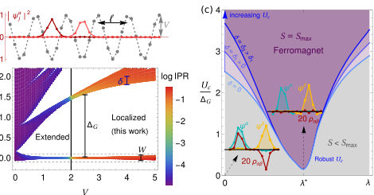
<figcaption class="paper-figure-caption"><b>Fig 1.</b> FIG. 1. Problem and main results. (a) Illustration of a quasi- periodic potential (points in gray) forming a moiré pattern with length ℓ. In the localized phase, the eigenstates in the lowest-energy narrow band are localized around the potential minima in each moiré cell. (b) Non-interacting spectrum of the 1D Aubry-André model, colored by the inverse participa- tion ratio (IPR). We focus on half filling of the low-energy nar- row band highlighted by the dashed box, within the localized phase. The bandwidth W is much smaller than the gap ∆G to higher-energy states, allowing a controlled narrow-band pro- jection of the Hamiltonian when the relevant interaction scale satisfies U ≪∆G. (c)...</figcaption>
</figure>
<figure class="paper-figure-card">
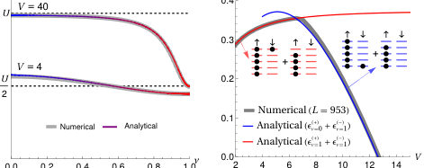
<figcaption class="paper-figure-caption"><b>Fig 2.</b> FIG. 2. Numerical and analytical results for charge excita- tions for the 1D Aubry-André model with t2 = t3 = 0. (a) Interacting contribution to the spectrum of charge excita- tions by diagonalization of the U-dependent term in Eq. 4, as a function of the eigenstate label ν = α/NB, where α = 0, · · · , NB −1. The analytical results using the inter- acting term in Eq. 5 are also shown. (b) Charge gap ∆c as a function of V for U = 3/4. The insets illustrate the dominant particle-hole excitations for small (red) and large (blue) V . The analytical expressions are provided in the SM.</figcaption>
</figure>
<figure class="paper-figure-card">
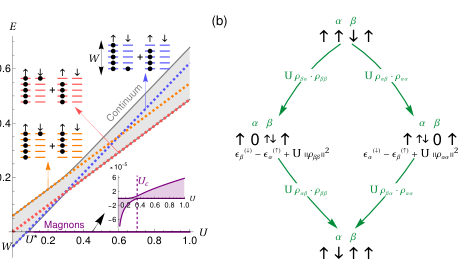
<figcaption class="paper-figure-caption"><b>Fig 3.</b> FIG. 3. Spin-flip excitations and magnons. (a) Example magnon spectrum for V = 3.5, t2 = −0.7 and L = 225. The upper insets illustrate different competing excitations in the particle-hole continuum. The lower inset shows a close- up of the narrow magnon bound-state branch. For U &gt; U ∗</figcaption>
</figure>
<figure class="paper-figure-card">
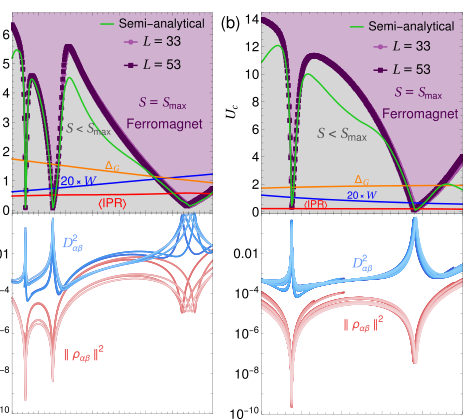
<figcaption class="paper-figure-caption"><b>Fig 4.</b> FIG. 4. Ferromagnets induced by wavefunction detuning. Top panels: Uc as a function of t2 for different system sizes. Bottom panels: squared overlap norm ∥ραβ∥2 and wavefunc- tion detuning D2 αβ for the dominant nearest-neighbor bonds entering the estimate of Uc in Eq. (11) (shown in green). We restrict to pairs with ∆αβ &gt; δr = 0.01, for which the off- diagonal particle-hole states |α, β⟩can be reliably integrated out. We also show the single-particle gap ∆G, the narrow- band bandwidth W, and the average inverse participation ra- tio ⟨IPR⟩of the narrow-band eigenstates. (a) Results for the 1D model with t3 = 0. (b) Results for the 2D model with t2 = −1.25t3.</figcaption>
</figure>
</div>

<p><strong>Summary.</strong> The paper develops a theory to explain ferromagnetism in narrow bands of localized electrons found in moiré superlattices. It shows that the magnetic stability depends critically on the geometric overlap of single-particle wavefunctions rather than just band curvature. By analyzing spin excitations, the authors establish quantitative predictions for the critical interaction strength required to induce magnetism.</p>
<p><strong>Why it may be interesting.</strong> This work provides a concrete, geometrically driven mechanism for magnetism in correlated systems without translational symmetry, which is highly relevant for understanding emergent phenomena in moiré heterostructures and artificial quantum materials.</p>
<details>
<summary>Detailed structure</summary>
<p><strong>Main problem.</strong> The research aims to determine the mechanism for ferromagnetism in narrow electronic bands formed by Anderson-localized states within moiré superlattices.</p>
<p><strong>Main result.</strong> Ferromagnetism can be stabilized at critical interaction strengths ($U_c$) determined by the geometry of real-space overlaps between localized wavefunctions, providing a route distinct from traditional quantum geometry arguments.</p>
<p><strong>Method.</strong> The analysis involves projecting the Hubbard model onto the narrow band subspace and studying the stability of the fully polarized state by examining spin-flip excitations (magnons).</p>
<p><strong>Model / system.</strong> The system is modeled using an effective Hamiltonian for quasiperiodic moiré lattices, incorporating nearest-neighbor hopping and on-site Coulomb repulsion ($U$). The physics is analyzed in terms of localized single-particle eigenstates.</p>
<p><strong>Key observables.</strong> Critical interaction strength ($U_c$), magnon excitation spectrum, Inverse Participation Ratio (IPR), and the energy difference between spin sectors ($\Delta E$).</p>
<p><strong>Important parameters / regimes.</strong> Interaction strength ($U$), hopping parameters ($t$, $V$), localization length ($\xi$), and wavefunction overlap geometry ($
ho_{\alphaeta}$).</p>
<p><strong>Assumptions / limitations.</strong> The theory relies on projecting the full Hamiltonian onto a narrow-band subspace, assuming that low-energy physics is dominated by these localized states.</p>
<p><strong>Figures summary.</strong> Figures illustrate the evolution of the magnon spectrum (transition from continuum to bound modes) and show how $U_c$ depends on system parameters, confirming robustness checks across varying numbers of included high-energy states.</p>
<p><strong>Paper structure.</strong> The paper systematically derives effective Hamiltonians for charge and spin excitations, calculates single-particle properties like IPR using locator expansions, and finally uses exact diagonalization to verify the global ground state transition point ($U_c$) by comparing low-spin vs. fully polarized energy sectors.</p>
</details>
<details>
<summary>Abstract</summary>
<p>We present a mechanism for ferromagnetism in narrow bands consisting of Anderson-localized states. We exploit single-particle localization to derive a controlled theory of exchange interactions within the narrow band. For quasiperiodic systems with a half-filled moiré band, we show that the critical interaction strength for ferromagnetism is highly sensitive to the geometry of real-space overlaps between localized orbitals: we find well-defined resonances at which ferromagnetism sets in for interaction energies that are far lower than the gap to other bands. Near these resonances, all the approximations in our theory are controlled, so our critical point predictions are quantitative. We show examples both in one and two dimensions. Our work identifies a route to ferromagnetism based on the geometry of real-space wavefunctions, distinct from previously found mechanisms based on the quantum geometry of Bloch bands.</p>
</details>
<p><sub><a href="#top">↑ back to top</a></sub></p>

<p><a id="paper-2606.12409"></a></p>
<h3 id="a-pfaffian-quantum-hall-state-of-ultracold-bosons">⭐ <a href="http://arxiv.org/abs/2606.12409v1">A Pfaffian quantum Hall state of ultracold bosons</a></h3>
<p><strong>Highlighted author(s):</strong> Markus Greiner<br>
<strong>Authors:</strong> Joyce Kwan, Perrin Segura, Yanfei Li, Tizian Blatz, Annie Zhi, Brice Bakkali-Hassani, Annabelle Bohrdt, Martin Greiter, Fabian Grusdt, Markus Greiner<br>
<strong>Type:</strong> experiment · <strong>Category:</strong> other · <strong>PDF:</strong> <a href="https://arxiv.org/pdf/2606.12409v1">https://arxiv.org/pdf/2606.12409v1</a><br>
<strong>Analysis basis:</strong> full PDF text, analyzed in chunks
<strong>Topic relevance:</strong> 🔥 <code>analog quantum simulation</code> <strong>4/5</strong> · <code>non-equilibrium dynamics</code> <strong>3/5</strong> · <code>non-equilibrium universality</code> <strong>2/5</strong> · <code>driven-dissipative phase transition</code> <strong>1/5</strong> · <code>entanglement &amp; information structure</code> <strong>1/5</strong> · <code>exotic spin models in light-matter</code> <strong>1/5</strong> · <code>methods for driven-dissipative</code> <strong>1/5</strong></p>
<div class="figure-strip-hint">↔ Scroll figures horizontally</div>
<div class="paper-figures-scroll">
<figure class="paper-figure-card">
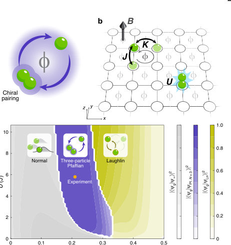
<figcaption class="paper-figure-caption"><b>Fig 1.</b> FIG. 1. Three-particle Pfaffian state of ultracold bosons in an optical lattice. a, The analytic wave function proposed in equation (2) describes a three-particle bosonic Pfaffian state. While the full Pfaffian wave function describes a p-wave paired many-body state, in the three-particle case one particle remains unpaired and the wave function is mod- ified by a finite-size correction. The resulting wave function describes vortex motion between the pair and the unpaired single particle. b, By engineering a synthetic magnetic field, we realize this state with three charge-neutral 87Rb atoms in an optical lattice, confined to 5 × 5 sites. The system is de- scribed by the interacting bosonic...</figcaption>
</figure>
<figure class="paper-figure-card">
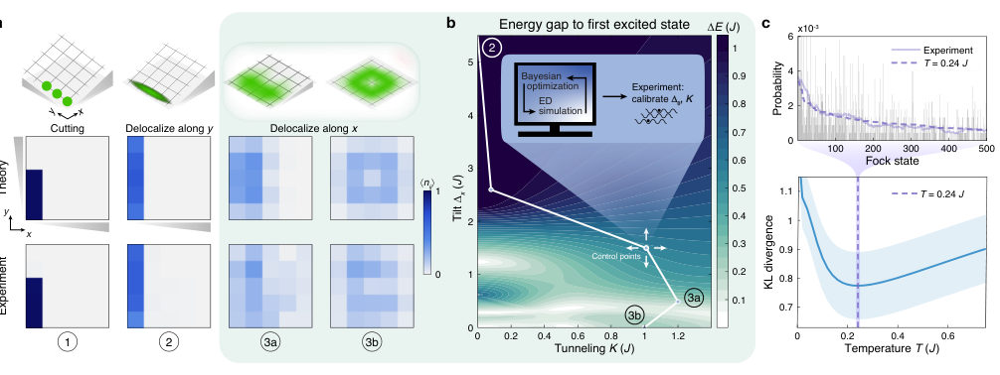
<figcaption class="paper-figure-caption"><b>Fig 2.</b> FIG. 2. Preparation of a minimal bosonic Pfaffian state. a, Experimental sequence. Shown are schematics of the state in the Harper–Hofstadter Hamiltonian (top), the corresponding ground-state density from exact diagonalization (middle), and the measured in-situ density (bottom). The sequence consists of three stages: initialization of three localized atoms on a 5 × 5 lattice, delocalization along y into a 1D tube, and delocalization along x into the final 2D Pfaffian state. Panels (3a) and (3b) show densities near the end of the final ramp stage. b, Energy gap between the ground and first excited states as a function of the tunneling amplitude along x, K, and the residual tilt along x, ∆x,...</figcaption>
</figure>
<figure class="paper-figure-card">
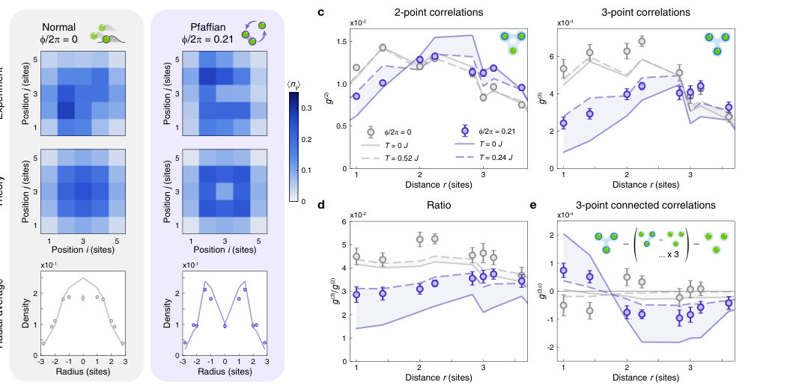
<figcaption class="paper-figure-caption"><b>Fig 3.</b> FIG. 3. Particle densities and correlations in the Pfaffian and normal regimes. a, Measured density distributions on the 5 × 5 lattice (top) compared with ground-state theory (bottom). b, Radial average of the density distribution. For the three-particle Pfaffian state, defined in equation (2), depletion at the central site is clearly visible, consistent with the chiral structure induced by the synthetic magnetic field. Solid lines show ground-state theory. Error bars denote s.e.m. c, Two- and three-point density correlation functions probing the pairing structure of the Pfaffian state. The data show clear suppression of g(3) at short distances, consistent with Pfaffian pairing, and agree...</figcaption>
</figure>
<figure class="paper-figure-card">
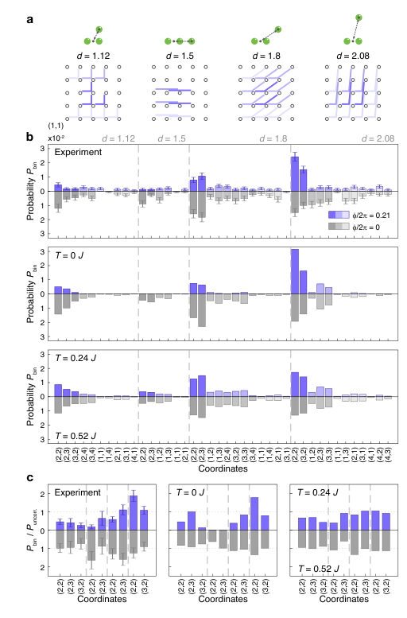
<figcaption class="paper-figure-caption"><b>Fig 4.</b> FIG. 4. Analysis of binned particle configurations. Site-resolved imaging probes the paired structure of the Pfaf- fian wave function using the exact particle positions. a, Im- ages containing a nearest-neighbor pair are grouped into bins according to the bond-center distance d, defined as the dis- tance between the third particle and the pair’s center of mass. Each bin is represented by a line connecting three lattice sites on the 5 × 5 grid. Configurations related by mirror or rota- tional symmetry are assigned to the same bin. Colors indicate the number of particles in the bulk: three (dark purple), two (mid purple), or one or zero (light purple). Bins are labeled by the (x, y)...</figcaption>
</figure>
<figure class="paper-figure-card">
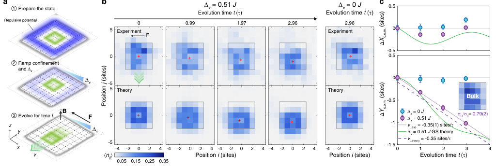
<figcaption class="paper-figure-caption"><b>Fig 5.</b> FIG. 5. The Hall drift experiment. Transport response of the Pfaffian state probed through center-of-mass drift. a, Experimental protocol: (1) prepare the Pfaffian state within the repulsive walls; (2) lower the confinement and apply a force along the x direction; (3) measure the density profile after an evolution time t. b, Measured density profiles with an applied tilt (top) compared with theory (bottom). In the presence of a force, the density drifts in the transverse y direction, whereas it remains stationary over the same evolution time when no force is applied (right). c, Transverse center-of-mass drift. The drift velocity v⊥is extracted from a linear fit to the transverse...</figcaption>
</figure>
</div>

<p><strong>Summary.</strong> The research demonstrates the bottom-up engineering of a Pfaffian quantum Hall state using ultracold bosonic atoms in an optical lattice. By employing optimized adiabatic ramps and measuring correlation functions and transport properties, the authors provide strong evidence for non-Abelian topological order. This work establishes cold atoms as a powerful platform to study exotic many-body physics.</p>
<p><strong>Why it may be interesting.</strong> This work represents a cutting-edge demonstration of engineering complex topological phases in controllable quantum simulators. The combination of advanced control techniques (Floquet engineering, Bayesian optimization) with rigorous diagnostic tools (correlation functions, transport) makes it highly relevant for AMO physicists studying interacting many-body systems.</p>
<details>
<summary>Detailed structure</summary>
<p><strong>Main problem.</strong> The primary goal is to experimentally realize and characterize a Pfaffian quantum Hall state using ultracold bosons, which hosts non-Abelian topological order.</p>
<p><strong>Main result.</strong> The authors successfully prepared the three-particle bosonic Pfaffian state by optimizing adiabatic ramps and provided evidence through suppressed short-range three-body density correlations and measurable Hall drift plateaus.</p>
<p><strong>Method.</strong> State preparation involves a multi-stage, Bayesian-optimized adiabatic ramp sequence in an optical lattice. Characterization relies on site-resolved measurements of two- and three-point density correlation functions and transport measurements (Hall drift).</p>
<p><strong>Model / system.</strong> The system consists of ultracold $^{87}\mathrm{Rb}$ bosons confined in an optical lattice subjected to a Floquet-engineered synthetic magnetic field. The physics is modeled using the interacting Harper–Hofstadter Hamiltonian.</p>
<p><strong>Key observables.</strong> Two- and three-point density correlations ($g(2), g(3)$), connected three-body correlations ($g^{(3,c)}$), Hall drift velocity ($v_\perp$), and energy gap ($\Delta E$).</p>
<p><strong>Important parameters / regimes.</strong> Low temperatures ($T \lesssim 0.24 	ext{ J}$), specific flux values ($\phi/2\pi = 0.21$ for Pfaffian), and optimized ramp parameters.</p>
<p><strong>Assumptions / limitations.</strong> The analysis relies on the assumption that post-selection based on three atoms on distinct sites is representative of the full many-body state, and disorder reconstruction methods involve averaging potentially non-unique potential reconstructions.</p>
<p><strong>Figures summary.</strong> Figures illustrate the analytic wave function overlap (Fig. 1), the preparation sequence and gap mapping (Fig. 2), density distributions showing suppression of $g(3)$ in the Pfaffian state (Fig. 3), and Hall drift measurements confirming plateaus for different topological regimes (Fig. 5, Fig. 7).</p>
<p><strong>Paper structure.</strong> The paper details the theoretical model (Hamiltonian/Pfaffian wave function), describes the experimental setup using optical lattices and synthetic fields, outlines the state preparation protocol via Bayesian optimization of adiabatic ramps, and finally presents diagnostics using correlation functions and transport measurements to confirm topological order.</p>
</details>
<details>
<summary>Abstract</summary>
<p>Fractional quantum Hall states are a cornerstone of topological physics, hosting fractionally charged quasiparticles with exotic statistics that promise to enable topologically protected quantum information processing. Among these, the Pfaffian state introduced by Moore and Read implements a p-wave pairing structure that supports excitations with non-Abelian exchange statistics. Despite extensive study in electronic systems, direct access to its pairing structure has remained limited. Here we realize a three-particle bosonic Pfaffian state of ultracold $^{87}\mathrm{Rb}$ atoms in an optical lattice subject to a Floquet-engineered synthetic magnetic field. Using a Bayesian-optimized adiabatic protocol, we prepare a state exhibiting Pfaffian pairing correlations. Site-resolved measurements of multi-point density correlations reveal a pronounced suppression of short-range three-body coincidences, reflecting the underlying pairing structure. We further probe the state's transport response through Hall drift measurements. Our results establish a bottom-up approach to engineering non-Abelian topological order and lay the groundwork for future explorations of anyonic braiding in synthetic matter.</p>
</details>
<p><sub><a href="#top">↑ back to top</a></sub></p>

<p><a id="paper-2606.11550"></a></p>
<h3 id="polarization-resolved-photon-statistics-of-cavity-quantum-materials"><a href="http://arxiv.org/abs/2606.11550v1">Polarization-Resolved Photon Statistics of Cavity Quantum Materials</a></h3>
<p><strong>Authors:</strong> Benjamin Kass, Spenser Talkington, Martin Claassen<br>
<strong>Type:</strong> theory · <strong>Category:</strong> strongly correlated electrons · <strong>PDF:</strong> <a href="https://arxiv.org/pdf/2606.11550v1">https://arxiv.org/pdf/2606.11550v1</a><br>
<strong>Analysis basis:</strong> full PDF text, analyzed in chunks
<strong>Topic relevance:</strong> 🔥 <code>exotic spin models in light-matter</code> <strong>5/5</strong> · 🔥 <code>analog quantum simulation</code> <strong>4/5</strong> · 🔥 <code>correlated cavity matter</code> <strong>4/5</strong> · 🔥 <code>spintronics-quantum-optics interface</code> <strong>4/5</strong> · <code>Tavis-Cummings &amp; cavity-many-emitter</code> <strong>2/5</strong> · <code>Keldysh / 2PI / non-Gaussian methods</code> <strong>1/5</strong> · <code>correlated / nonlocal dissipation</code> <strong>1/5</strong> · <code>driven-dissipative phase transition</code> <strong>1/5</strong> · <code>entanglement &amp; information structure</code> <strong>1/5</strong> · <code>interference shaping light</code> <strong>1/5</strong></p>
<div class="figure-strip-hint">↔ Scroll figures horizontally</div>
<div class="paper-figures-scroll">
<figure class="paper-figure-card">
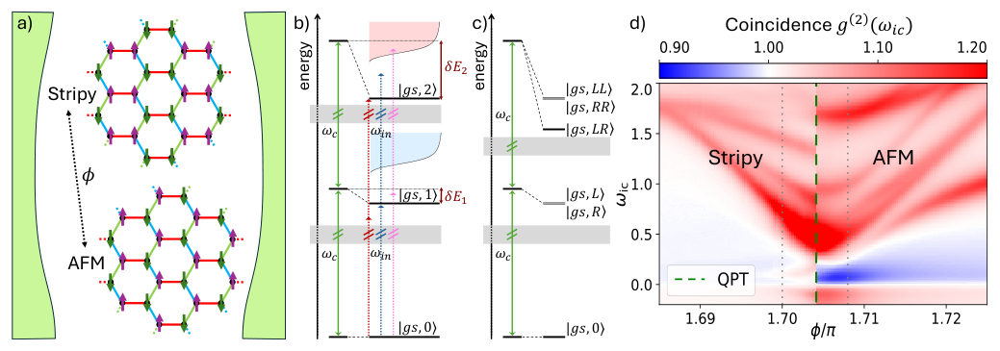
<figcaption class="paper-figure-caption"><b>Fig 1.</b> FIG. 1. Many-Body Photon Blockade. (a) The cavity-embedded Kitaev-Heisenberg spin model is a paradigmatic model hosting a rich set of competing magnetic phases that can hybridize with cavity photons. Classical ordering patterns of spins are shown for stripy and N´eel-antiferromagnet (AFM) phases, tuned via a mixing angle ϕ for Kitaev and Heisenberg interactions. (b) Energy levels of the n-photon sector ground states |gs, n⟩, with a single cavity mode. Without light-matter coupling, these states are equally separated by the cavity mode frequency ωc (green arrows). With light-matter coupling, the photons and material hybridize, causing energy shifts δEn ∝n2 that are non-linear in the photon...</figcaption>
</figure>
<figure class="paper-figure-card">
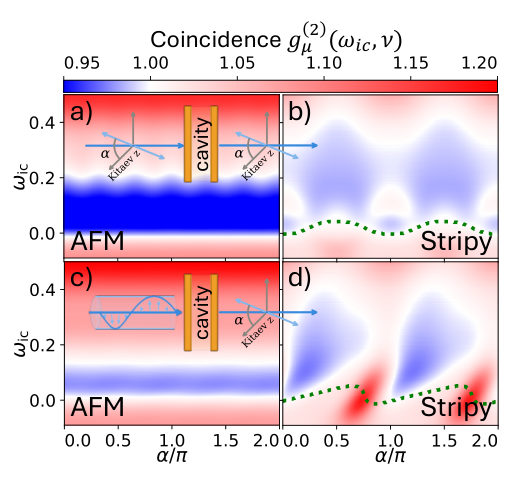
<figcaption class="paper-figure-caption"><b>Fig 2.</b> FIG. 2. Polarization-Dependent Coincidence. Coinci- dence response in a cavity with two polarization modes as a function of the output photon linear polarization angle α in the plane of the material relative to the Kitaev z bonds. The top row shows the response to linearly polarized input pho- tons with the same angle α while the bottom row uses right circularly polarized input photons, as depicted in the overlaid diagrams. (a) and (c) Coincidence for the AFM phase at ϕ = 1.708π. (b) and (d) Coincidence for the stripy phase at ϕ = 1.7π, biased along Kitaev z bonds. These correspond to the gray dotted lines in Fig. 1(d). As in Fig. 1(d), γ = 0.1, g = 0.3, ω0 = 0.6, and B = 0.001. Green...</figcaption>
</figure>
<figure class="paper-figure-card">
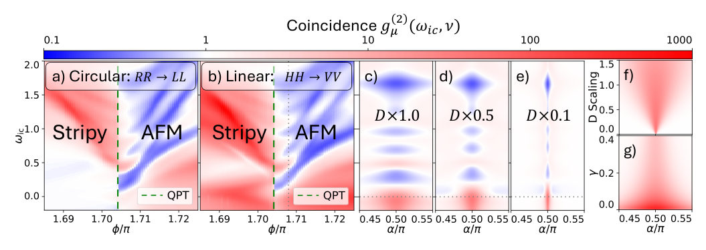
<figcaption class="paper-figure-caption"><b>Fig 3.</b> FIG. 3. Polarization Rotation. Coincidence response across the stripy-to-AFM phase transition of Fig. 1(d) for photons rotated from the input polarization. (a) Circularly polarized photons input with right (R) and output with left (L) circular polarization. (b) Linearly polarized photons input aligned with Kitaev z bonds (H) and output perpendicular to them (V ). Coincidence vs linearly polarized output rotation angle α relative to input light along the z bond for the AFM point at ϕ = 1.708π corresponding to the gray dotted line in (b), as the light-matter coupling strength D is scaled by (c) 1.0, (d) 0.5, and (e) 0.1 relative to its value in Fig. 1 and in Sec. III. (f) Coincidence vs α and...</figcaption>
</figure>
<figure class="paper-figure-card">
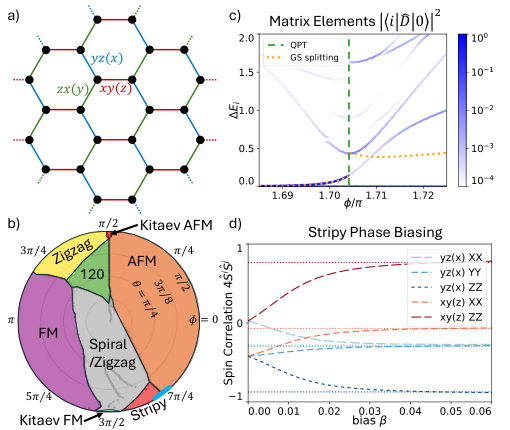
<figcaption class="paper-figure-caption"><b>Fig 4.</b> FIG. 4. Model and Biasing Info. (a) yz(x), zx(y), and xy(z) bonds of the J-K-Γ model shown in blue, green, and red respectively on the 24 site cluster with periodic bound- ary conditions. (b) Phase diagram of the J-K-Γ model with Γ &gt; 0, parameterized by θ and ϕ as in Eq. (A2). The blue line shows the linecut used to study the stripy-to- antiferromagnetic (AFM) quantum phase transition (QPT). (c) Strength of the matrix elements from the ground state to Raman active excitations across the stripy-to-AFM QPT. The orange dotted lines show the finite size splitting of the ground state manifold; this lines up with the Raman active low energy excitations in the stripy phase, but sits at higher...</figcaption>
</figure>
<figure class="paper-figure-card">
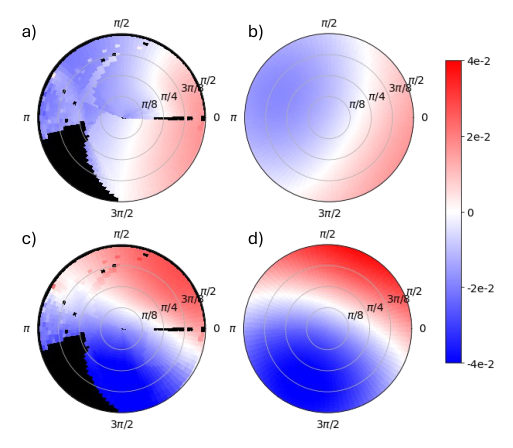
<figcaption class="paper-figure-caption"><b>Fig 5.</b> FIG. 5. Light-Matter Coupling Parameters. D11 xx along the xy(z) bonds (a) as calculated from quasi-degenerate per- turbation theory going from the full to the spin Hamiltonian where possible (fitting errors above 10−6 appear in black) vs (b) using a least squares best fit against J, K, and Γ. (c) and (d) are the same for D11 zz.</figcaption>
</figure>
</div>

<p><strong>Summary.</strong> The paper demonstrates that measuring polarization-resolved photon statistics ($g^{(2)}$) transmitted through an optical cavity coupled to a quantum magnet can act as a sensitive probe of the underlying magnetic order. By analyzing how bunching and antibunching change with input/output polarizations, researchers can map out the magnetic point group symmetries across quantum phase transitions in models like the Kitaev-Heisenberg system.</p>
<p><strong>Why it may be interesting.</strong> This work provides a powerful, non-invasive optical diagnostic tool for characterizing the complex ground state symmetries and correlation functions of strongly correlated quantum magnets, bridging cavity QED with condensed matter magnetism.</p>
<details>
<summary>Detailed structure</summary>
<p><strong>Main problem.</strong> The study aims to develop a diagnostic method using polarization-resolved photon statistics ($g^{(2)}$) to unambiguously probe light-matter coupling effects and characterize magnetic properties in cavity quantum materials.</p>
<p><strong>Main result.</strong> Polarization-dependent patterns of photon bunching/antibunching encode the magnetic point-group symmetries of different phases (e.g., $C_2$ vs $C_6$) and allow for probing higher-order material correlations via orthogonal polarization measurements.</p>
<p><strong>Method.</strong> The analysis uses Green's function formalism and perturbative expansions to calculate the two-photon correlation function, $g^{(2)}$, relating it directly to matter correlation functions like the Raman structure factor.</p>
<p><strong>Model / system.</strong> The system models an optical cavity coupled to quantum magnets described by extensions of the Kitaev-Heisenberg spin model (J-K-$\Gamma$ model) on lattices like honeycomb clusters. The Hamiltonian includes terms for Heisenberg, Kitaev, and general couplings.</p>
<p><strong>Key observables.</strong> Polarization-resolved second-order photon correlation function ($g^{(2)}_{\mu\mu'}$), which exhibits bunching ($>1$) or antibunching ($<1$).</p>
<p><strong>Important parameters / regimes.</strong> Coupling strength ($D$), input/output polarizations ($\mu, \mu'$), and magnetic parameters defining the phase (e.g., $    heta, \phi$ in J-K-$\Gamma$ model).</p>
<p><strong>Assumptions / limitations.</strong> The analysis relies on perturbative expansions in the coupling strength $D$, often assuming a Markovian approximation for the cavity dynamics.</p>
<p><strong>Figures summary.</strong> Figures illustrate phase diagrams, energy level shifts ($\delta E_n \propto n^2$), and polarization-dependent coincidence spectra ($g^{(2)}$) showing symmetry changes across Quantum Phase Transitions (QPTs).</p>
<p><strong>Paper structure.</strong> The paper builds theoretically by establishing the link between $g^{(2)}$ and matter correlations, applying this to specific models like Kitaev/J-K-$\Gamma$, and detailing how polarization filtering isolates higher-order scattering processes sensitive to magnetic symmetries.</p>
</details>
<details>
<summary>Abstract</summary>
<p>By forming hybrid light-matter states, optical cavities offer a route for engineering material properties, however, unambiguously probing the effects of light-matter coupling remains difficult. Here, we show that the polarization-resolved statistics of photons transmitted through a cavity, measurable via $g^{(2)}$, provide one such diagnostic. By relating $g^{(2)}$ to matter correlation functions such as the Raman structure factor, we link photon bunching and antibunching to material properties. By applying this method to the stripy-to-antiferromagnetic transition in the Kitaev-Heisenberg spin model, we find that polarization-dependent patterns of bunching and antibunching encode the magnetic point-group symmetries of each phase and characterize the behavior at the phase boundary. Finally, we predict measuring $g^{(2)}$ for output photon pairs polarized orthogonal to the input field will isolate higher-order light-matter scattering processes that probe higher-order material correlations.</p>
</details>
<p><sub><a href="#top">↑ back to top</a></sub></p>

<p><a id="paper-2606.12089"></a></p>
<h3 id="non-hermitian-delocalization-realizes-random-dirac-criticality-in-one-dimension"><a href="http://arxiv.org/abs/2606.12089v1">Non-Hermitian Delocalization Realizes Random Dirac Criticality in One Dimension</a></h3>
<p><strong>Authors:</strong> Bo Li, Shen Zhang, Ren Zhang<br>
<strong>Type:</strong> theory · <strong>Category:</strong> disordered systems and neural networks · <strong>PDF:</strong> <a href="https://arxiv.org/pdf/2606.12089v1">https://arxiv.org/pdf/2606.12089v1</a><br>
<strong>Analysis basis:</strong> full PDF text, analyzed in chunks
<strong>Topic relevance:</strong> 🔥 <code>non-equilibrium universality</code> <strong>5/5</strong> · 🔥 <code>driven-dissipative phase transition</code> <strong>4/5</strong> · <code>Kondo &amp; dissipative impurity</code> <strong>3/5</strong> · <code>methods for driven-dissipative</code> <strong>3/5</strong> · <code>non-equilibrium dynamics</code> <strong>3/5</strong> · <code>Keldysh / 2PI / non-Gaussian methods</code> <strong>1/5</strong> · <code>analog quantum simulation</code> <strong>1/5</strong> · <code>correlated / nonlocal dissipation</code> <strong>1/5</strong></p>
<div class="figure-strip-hint">↔ Scroll figures horizontally</div>
<div class="paper-figures-scroll">
<figure class="paper-figure-card">
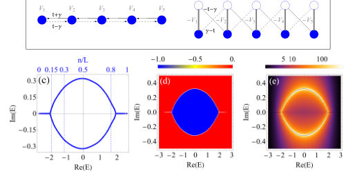
<figcaption class="paper-figure-caption"><b>Fig 1.</b> FIG. 1. Schematic plot for the (a) Hatano-Nelson model and (b) the Hermitization model (E = 0 is assumed). (c) The PBC spectrum of the Hatano-Nelson model, where the upper ticks (blue) label the order of eigenstates according to the real part of their eigenvalues, where the order index is normalized by the system size (the total number of eigenstates). (d) The topological invariant of the Hamiltonian ˜H as a function of (Er, Ei). (e) Localization length as a function of complex energy (extracted from a system with L = 2000). In (d) and (e), both of the white and black lines show the overlaid PBC spectrum. In the plots, the parameters are t = 1, γ = 0.2, and W = 1.</figcaption>
</figure>
<figure class="paper-figure-card">
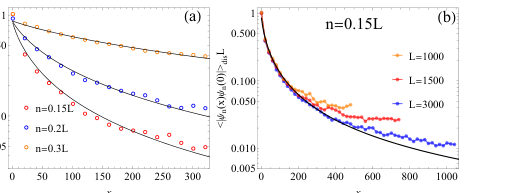
<figcaption class="paper-figure-caption"><b>Fig 2.</b> FIG. 3. (a) Wavefunction correlation as a function of dis- tance, where L = 1000 and 5 × 103 realizations of disorder are performed. (b) the correlation for “n = 0.15L”-th state for three systems with different sizes, where 5 × 103 −2 × 105</figcaption>
</figure>
<figure class="paper-figure-card">
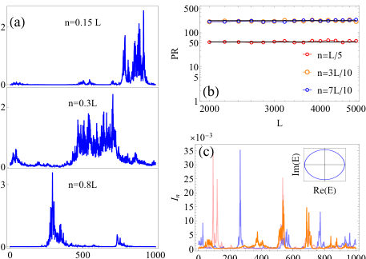
<figcaption class="paper-figure-caption"><b>Fig 3.</b> FIG. 2. (a) The wavefunction profile of selected eigenstates by the order of their real part of eigenvalues [see Fig. 1 (c)] under PBC. (c) Participation ratio for selected eigenstates as a function of system size. Here, an average is taken over 200 realizations of disorder. (a) and (b) take the same parameters as Fig. 1. (d) Wave intensity profile for different disorder realizations, where parameters t = 1, γ = 0.8, and W = 1 are used; the inset shows the corresponding PBC spectrum.</figcaption>
</figure>
<figure class="paper-figure-card">
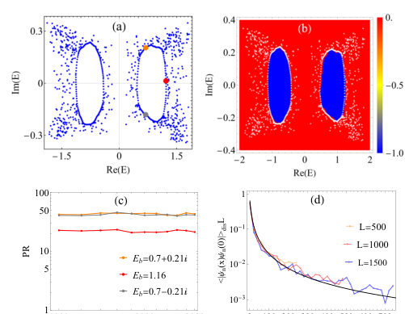
<figcaption class="paper-figure-caption"><b>Fig 4.</b> FIG. 4. (a) The spectrum of the two-band model with dis- order. (b) The topological invariant of the corresponding ˜H, with the white dots indicating the overlaid PBC spectrum. (c) The averaged participation ratio for eigenstates on the spectral loop with energies corresponding to the three makers in (a) (in the same colors). (d) The wave function correlations for the loop state with energy near the red marker in (a). In the plots, parameters are: r = 1, v = 0.3, W = 1, and λ = 0.8.</figcaption>
</figure>
</div>

<p><strong>Summary.</strong> The paper proves that delocalized states in non-Hermitian systems are inherently critical, realizing the random Dirac universality class. This is achieved by linking the system's spectral winding number to topological invariants via a Hermitian mapping. The key finding is that this criticality emerges generically due to non-Hermiticity, providing a unified description of delocalization.</p>
<p><strong>Why it may be interesting.</strong> This work provides a powerful theoretical framework showing how spectral topology (winding number) dictates universal critical behavior in non-Hermitian disordered systems, extending concepts vital for understanding open quantum systems dynamics.</p>
<details>
<summary>Detailed structure</summary>
<p><strong>Main problem.</strong> To demonstrate that non-Hermitian delocalized states under periodic boundary conditions are intrinsically critical, realizing the universality class of one-dimensional random Dirac fermions.</p>
<p><strong>Main result.</strong> The paper establishes a universal mechanism where non-Hermiticity promotes criticality, linking spectral winding to topological Anderson transitions and yielding characteristic $x^{-3/2}$ algebraic correlations.</p>
<p><strong>Method.</strong> The analysis uses the Hermitization method to map the non-Hermitian system onto a Hermitian model exhibiting a Topological Anderson Transition (TAI), followed by calculating wavefunction correlation functions in the long-wavelength limit.</p>
<p><strong>Model / system.</strong> The primary model is the Hatano–Nelson (HN) non-Hermitian Hamiltonian, analyzed on a spectral loop. The theory extends concepts from topological insulators and Anderson localization to this non-Hermitian setting.</p>
<p><strong>Key observables.</strong> Participation Ratio (PR), average wavefunction distribution ($I_j$), and wavefunction correlation $\langle|\psi(x)\psi(0)|_q
angle_{dis}$ exhibiting $x^{-3/2}$ decay.</p>
<p><strong>Important parameters / regimes.</strong> System size ($L$), disorder strength, spectral winding number, and the energy relative to the spectral loop ($\delta E$).</p>
<p><strong>Assumptions / limitations.</strong> The analysis relies on the long-wavelength limit for deriving effective Hamiltonians and calculating correlation functions via path integrals.</p>
<p><strong>Figures summary.</strong> Figures illustrate the HN model setup, the construction of the Hermitian counterpart $ ilde{H}$, the spectral loop structure, wavefunction profiles, PR scaling (size-independent), and the characteristic $x^{-3/2}$ decay of correlations.</p>
<p><strong>Paper structure.</strong> The paper progresses by defining the non-Hermitian system and its associated topological invariant via winding numbers. It then analyzes key diagnostics like PR and average distribution to show critical behavior, culminating in the calculation of wavefunction correlations that confirm Dirac criticality.</p>
</details>
<details>
<summary>Abstract</summary>
<p>Non-Hermitian systems can evade Anderson localization and exhibit delocalized states even in one dimension. Here, we show that such non-Hermitian delocalized states under periodic boundary conditions (PBC) are intrinsically critical, realizing the universality class of one-dimensional random Dirac fermions. By linking spectral winding to topological Anderson transitions via Hermitization, we demonstrate that the delocalized PBC states exhibit a Dirac-type criticality with universal algebraic correlations. In contrast to Hermitian systems, where this criticality occurs only at fine-tuned transition points, it emerges generically in non-Hermitian systems as a consequence of spectral topology. These results identify a universal mechanism by which non-Hermiticity promotes criticality, providing a unified description of non-Hermitian delocalization in one dimension.</p>
</details>
<p><sub><a href="#top">↑ back to top</a></sub></p>

<p><a id="paper-2606.11975"></a></p>
<h3 id="super-heisenberg-non-equilibrium-quantum-sensing-with-waveguide-coupled-emitters"><a href="http://arxiv.org/abs/2606.11975v1">Super-Heisenberg Non-Equilibrium Quantum Sensing with Waveguide-Coupled Emitters</a></h3>
<p><strong>Authors:</strong> Mohammad B. Arjmandi<br>
<strong>Type:</strong> theory · <strong>Category:</strong> other · <strong>PDF:</strong> <a href="https://arxiv.org/pdf/2606.11975v1">https://arxiv.org/pdf/2606.11975v1</a><br>
<strong>Analysis basis:</strong> full PDF text, analyzed in chunks
<strong>Topic relevance:</strong> 🔥 <code>correlated / nonlocal dissipation</code> <strong>4/5</strong> · 🔥 <code>methods for driven-dissipative</code> <strong>4/5</strong> · <code>Tavis-Cummings &amp; cavity-many-emitter</code> <strong>3/5</strong> · <code>correlated cavity matter</code> <strong>3/5</strong> · <code>driven-dissipative phase transition</code> <strong>3/5</strong> · <code>non-equilibrium dynamics</code> <strong>3/5</strong> · <code>Dicke superradiance</code> <strong>2/5</strong> · <code>Keldysh / 2PI / non-Gaussian methods</code> <strong>2/5</strong> · <code>entanglement &amp; information structure</code> <strong>2/5</strong> · <code>non-equilibrium universality</code> <strong>2/5</strong> · <code>analog quantum simulation</code> <strong>1/5</strong> · <code>interference shaping light</code> <strong>1/5</strong> · <code>measurement-induced transitions</code> <strong>1/5</strong> · <code>quantum measurements</code> <strong>1/5</strong> · <code>superradiant laser</code> <strong>1/5</strong></p>
<div class="figure-strip-hint">↔ Scroll figures horizontally</div>
<div class="paper-figures-scroll">
<figure class="paper-figure-card">
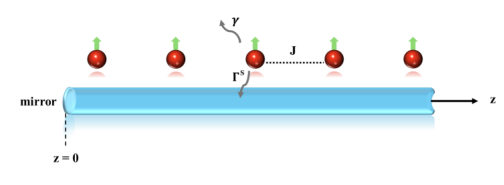
<figcaption class="paper-figure-caption"><b>Fig 1.</b> FIG. 1. Schematic figure of the considered model, including an ar- ray of emitters as a quantum probe coupled to a 1D waveguide. The emitters can be evenly spaced or randomly positioned. A highly re- flective mirror is placed at one end of the waveguide (z = 0). The emitters can experience both collective waveguide mediated decay Γs and independent local decay γ into free space.</figcaption>
</figure>
<figure class="paper-figure-card">
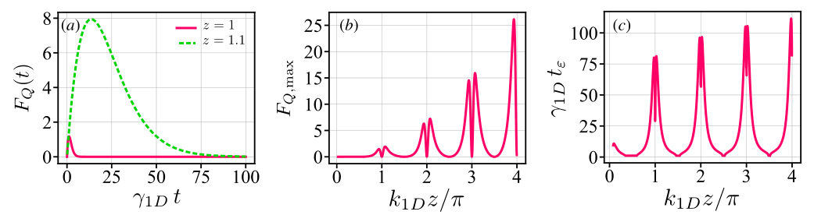
<figcaption class="paper-figure-caption"><b>Fig 2.</b> FIG. 2. (a) Time-dependence of QFI for single emitter probe, given by Eq. (20) with k1D = 2.7π, (b) maximum QFI and (c) temporal window over which the QFI remains non zero, against the emitter position, respectively given by (21) and (25). The local decay rate is fixed as γ = 0.1γ1D.</figcaption>
</figure>
<figure class="paper-figure-card">
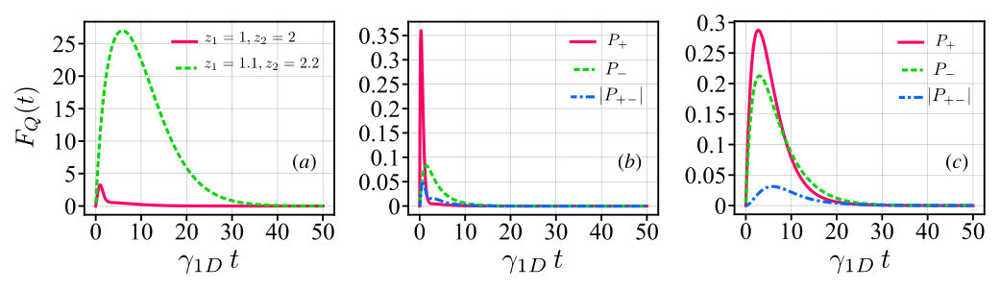
<figcaption class="paper-figure-caption"><b>Fig 3.</b> FIG. 3. Time evolution of QFI with two emitters as the quantum probe, and population and coherence in single excitation subspace for (b) z1 = 1,z2 = 2 and (c) z1 = 1.1,z2 = 2.2. The other parameters are the same as Fig. 2.</figcaption>
</figure>
<figure class="paper-figure-card">
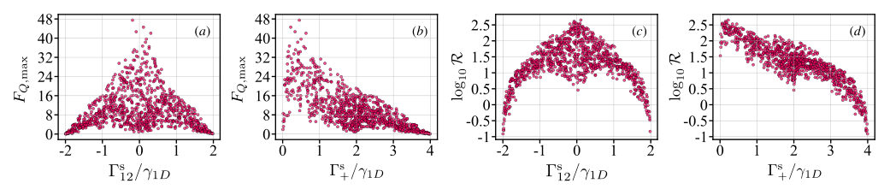
<figcaption class="paper-figure-caption"><b>Fig 4.</b> FIG. 4. Statistical behavior of (a), (b) maximum QFI and (c), (d) durability of information against cross decay term Γs 12 and superradiant decay rate Γs+, for 103 samples of random positions for the two emitters. The other parameters are the same as Fig. 2.</figcaption>
</figure>
<figure class="paper-figure-card">
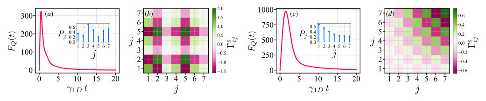
<figcaption class="paper-figure-caption"><b>Fig 5.</b> FIG. 5. (a), (c) Time evolution of QFI with 7 emitters as a quantum probe for (a) uniform and (c) shifted position configurations. The insets show the local excitation probabilities at the time instant for which the QFI reaches its maximum, (b), (c) the waveguide-induced decay rate Γs i j for corresponding positioning strategies. The parameters are the same as Fig. 2.</figcaption>
</figure>
</div>

<p><strong>Summary.</strong> The paper develops a theoretical framework showing how arrays of quantum emitters coupled to a photonic waveguide can act as ultrasensitive quantum sensors. By analyzing the transient, non-equilibrium decay dynamics, the authors demonstrate that careful engineering of emitter spacing leads to super-Heisenberg scaling in measurement precision (QFI). This highlights harnessing collective radiative dynamics for enhanced sensing capabilities.</p>
<p><strong>Why it may be interesting.</strong> This work provides a concrete realization of quantum metrology enhancement beyond established limits by engineering dissipation itself. It connects concepts from open quantum systems (decay dynamics) directly to fundamental limits in measurement precision, which is highly relevant for AMO physics research.</p>
<details>
<summary>Detailed structure</summary>
<p><strong>Main problem.</strong> To utilize arrays of quantum emitters coupled to a photonic waveguide as non-equilibrium probes for estimating the wave number or dispersive properties of the waveguide.</p>
<p><strong>Main result.</strong> The system exhibits super-Heisenberg scaling in Quantum Fisher Information (QFI), exceeding both Standard and Heisenberg limits, with optimal sensitivity achieved by controlling emitter spacing to suppress destructive cross-decay channels.</p>
<p><strong>Method.</strong> Theoretical analysis using master equations, focusing on transient dynamics following initial excitation rather than steady states. The QFI is calculated as the ultimate quantum limit for parameter estimation.</p>
<p><strong>Model / system.</strong> The system consists of multiple two-level emitters coupled to a one-dimensional photonic waveguide. Dynamics are governed by a master equation incorporating coherent evolution and dissipative decay channels (spontaneous emission).</p>
<p><strong>Key observables.</strong> Quantum Fisher Information ($  ext{QFI}$), its maximum value ($  ext{FQ}_{\max}$), and the time integral of $    ext{QFI}$ (measuring temporal persistence).</p>
<p><strong>Important parameters / regimes.</strong> Emitter spacing ($d$), waveguide wave number ($k_{1D}$), decay rates ($\gamma, \Gamma$), and system size ($N$). The regime is non-equilibrium/transient.</p>
<p><strong>Assumptions / limitations.</strong> The analysis relies on the Born–Markov approximation. For large $N$, numerical limitations restrict full simulation; specific optimal geometries (like shifted spacing) are analyzed to demonstrate scaling laws.</p>
<p><strong>Figures summary.</strong> Figures illustrate the time evolution of QFI for single and two-emitter probes, showing non-monotonic behavior. Later figures compare $    ext{QFI}_{\max}$ scaling with system size ($N$) against theoretical limits (SQL/HL), highlighting super-Heisenberg growth.</p>
<p><strong>Paper structure.</strong> The paper systematically progresses from establishing the sensing framework using QFI in the transient regime to analyzing single, two-, and finally multipartite probes. The core development involves showing how geometric control over collective decay channels leads to enhanced scaling laws.</p>
</details>
<details>
<summary>Abstract</summary>
<p>We explore an array of quantum emitters as non-equilibrium probes, coupled to a one-dimensional photonic waveguide, aiming to estimate its properties such as wave number which encodes the waveguide frequency and dispersive characteristics. By considering transient dynamics following initial excitation, we show that the quantum Fisher information (QFI) can be significantly enhanced through careful emitter positioning. For two-emitter probes, optimal spacing stabilizes populations and coherences in the single-excitation subspace, suppressing super radiant decay and extending both the magnitude and longevity of QFI. Randomized emitter configurations also reveal that vanishing waveguide-mediated cross decay maximizes both achievable sensitivity and the temporal duration over which information about the parameter remains accessible. Extending to multipartite probes, we demonstrate that the maximum QFI and its temporal integral scale with system size, exceeding the Heisenberg limit for all positioning strategies. Our results highlight the potential of waveguide-coupled emitter arrays as versatile quantum sensors, where collective radiative dynamics can be harnessed to achieve tunable, long-lived, and enhanced precision.</p>
</details>
<p><sub><a href="#top">↑ back to top</a></sub></p>

<p><a id="paper-2606.11997"></a></p>
<h3 id="dark-state-spectroscopy-in-nonlinear-waveguide-quantum-electrodynamics"><a href="http://arxiv.org/abs/2606.11997v1">Dark state spectroscopy in nonlinear waveguide quantum electrodynamics</a></h3>
<p><strong>Authors:</strong> Shay Nadel, Amir Sivan, Aviv Karnieli<br>
<strong>Type:</strong> theory · <strong>Category:</strong> other · <strong>PDF:</strong> <a href="https://arxiv.org/pdf/2606.11997v1">https://arxiv.org/pdf/2606.11997v1</a><br>
<strong>Analysis basis:</strong> full PDF text, analyzed in chunks
<strong>Topic relevance:</strong> 🔥 <code>methods for driven-dissipative</code> <strong>4/5</strong> · <code>analog quantum simulation</code> <strong>3/5</strong> · <code>correlated / nonlocal dissipation</code> <strong>3/5</strong> · <code>correlated cavity matter</code> <strong>3/5</strong> · <code>driven-dissipative phase transition</code> <strong>3/5</strong> · <code>Tavis-Cummings &amp; cavity-many-emitter</code> <strong>2/5</strong> · <code>non-equilibrium dynamics</code> <strong>2/5</strong> · <code>quantum measurements</code> <strong>2/5</strong> · <code>Dicke superradiance</code> <strong>1/5</strong> · <code>Keldysh / 2PI / non-Gaussian methods</code> <strong>1/5</strong> · <code>entanglement &amp; information structure</code> <strong>1/5</strong> · <code>interference shaping light</code> <strong>1/5</strong> · <code>measurement-induced transitions</code> <strong>1/5</strong> · <code>non-equilibrium universality</code> <strong>1/5</strong></p>
<div class="figure-strip-hint">↔ Scroll figures horizontally</div>
<div class="paper-figures-scroll">
<figure class="paper-figure-card">
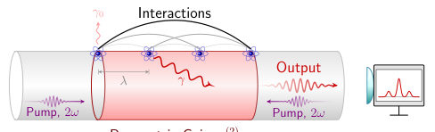
<figcaption class="paper-figure-caption"><b>Fig 1.</b> FIG. 1. System illustration. A waveguide with a nonlin- ear section of length L (red cylinder), pumped from the left and the right with coherent light at frequency 2ω (violet). The χ(2) nonlinearity introduces a parametric gain, generat- ing two photons in frequency ω and wavelength λ within the nonlinear segment. Identical two-level emitters with a tran- sition energy of ℏω are spaced by a wavelength and coupled to the nonlinear segment (depicted is the case of 4 emitters in blue). The output signal is collected from the right side of the waveguide. The emitter array can radiate with rate γ into the waveguide modes, and with rate γ0 to free-space. Within the nonlinear section, owing to the...</figcaption>
</figure>
<figure class="paper-figure-card">
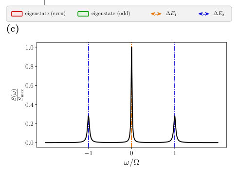
<figcaption class="paper-figure-caption"><b>Fig 2.</b> FIG. 2. Dark-state manifold and steady-state spec- troscopy for an ideal system (γ0 = 0) and N = 4 emit- ters. (a) Classification of the collective modes within the total angular momentum basis |j, m⟩. The dark states |Di⟩, which are the |j, −j⟩states, are color-coded depending on the value of their j-parity. (b) Dark eigenstates |ψi⟩of the Hamil- tonian Hint (Eq. (6a)) projected onto the dark-state manifold are illustrated with respect to their eigenvalue relative to the emitter transition. Only transitions between different j-parity values are allowed by the jump operators (Eq. (6b)). The allowed transitions are depicted as curly lines, with two dis- tinct colors matching ∆E1 = 0, ∆E2 =...</figcaption>
</figure>
<figure class="paper-figure-card">
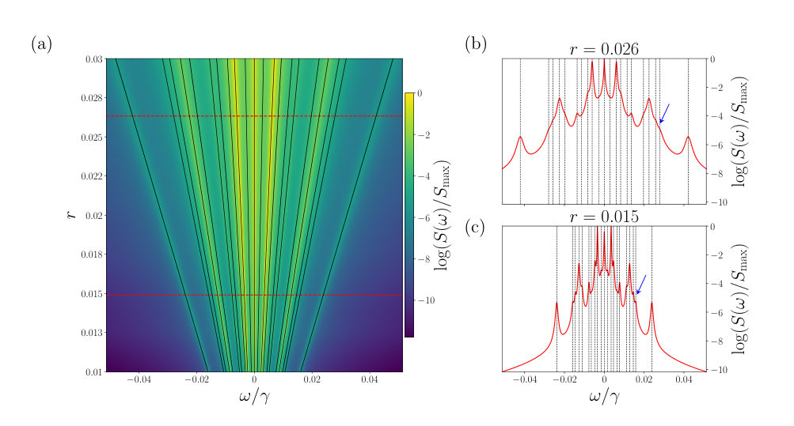
<figcaption class="paper-figure-caption"><b>Fig 3.</b> FIG. 3. Power spectrum for N = 6 emitters across varying squeezing parameters in the ideal case (γ0 = 0). (a) Heatmap of the incoherent steady-state power spectrum in logarithmic scale (log10), normalized for each value of r independently. The solid black lines correspond to allowed transition frequencies between dark eigenstates of the projected Hamiltonian PHintP. They show excellent agreement with the power spectrum peaks for small squeezing parameter r. For increasing values of r, the spectral features are broadened and spaced apart, making the peaks less distinct. (b), (c) Spectral line cross sections corresponding to the horizontal red lines in panel (a) for r = 0.026 and r = 0.015,...</figcaption>
</figure>
<figure class="paper-figure-card">
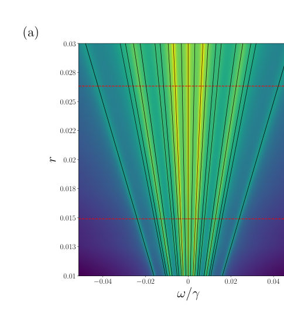
<figcaption class="paper-figure-caption"><b>Fig 4.</b> Fig. 4 illustrates the steady-state incoherent power spectrum of the right-moving waveguide mode for an ar- ray of N = 4 emitters under varying coupling efficiencies β. The ideal case (β = 1) exhibits sharp, symmetric peaks positioned exactly at the allowed transition fre- quencies. However, as the coupling to free space increases (β = 0.999 and β = 0.995), two distinct spectral changes emerge. First, the resonance peaks undergo significant broadening. This is an expected consequence of the free- space decay introducing an additional decoherence chan- nel, which fundamentally decreases the lifetime of the dark states. Second, as highlighted in the inset of Fig. 4,</figcaption>
</figure>
<figure class="paper-figure-card">
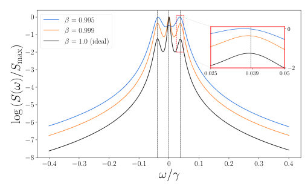
<figcaption class="paper-figure-caption"><b>Fig 5.</b> FIG. 4. Incoherent power spectrum for a nonideal system. Incoherent power spectrum at steady-state in loga- rithmic scale (log10) are plotted for different values of waveg- uide coupling efficiency β = γ/ (γ + γ0). β = 1 refers to the ideal case where γ0 = 0. The plots are calculated with squeez- ing parameter r = 0.01 and waveguide decay rate γ = 1.0. Inset is a zoom-in around the peaks of the curves. It shows broadening and Fano-like shifts in the peak position relative to the transition frequencies.</figcaption>
</figure>
</div>

<p><strong>Summary.</strong> The paper proposes using weakly squeezed light generated by nonlinear waveguides to spectroscopically measure 'dark states' in emitter arrays coupled to photonic waveguides. By analyzing the output photon spectrum, the authors demonstrate that otherwise unmeasurable collective excitations can be probed. This technique offers a pathway for robust quantum state characterization crucial for quantum memory and computation.</p>
<p><strong>Why it may be interesting.</strong> This work directly addresses open quantum systems dynamics in cavity QED settings. The use of nonlinear parametric amplification (squeezing) to probe dark states is a sophisticated extension of standard linear coupling models, providing new tools for quantum memory and computation readout.</p>
<details>
<summary>Detailed structure</summary>
<p><strong>Main problem.</strong> The fundamental challenge of measuring quantum states that are perfectly decoupled from the environment (dark states) while maintaining long coherence times.</p>
<p><strong>Main result.</strong> Weakly squeezed light generated in nonlinear waveguides can enable spectroscopy, allowing the measurement and characterization of these otherwise inaccessible dark states.</p>
<p><strong>Method.</strong> The analysis uses the Lindblad master equation formalism combined with input-output theory to calculate the incoherent power spectrum $S(\omega)$ from output photon correlations.</p>
<p><strong>Model / system.</strong> The system consists of an array of emitter qubits coupled to a one-dimensional photonic waveguide, enhanced by $\chi^{(2)}$ nonlinearity realized in superconducting circuits. The dynamics are governed by an effective interaction Hamiltonian and associated jump operators.</p>
<p><strong>Key observables.</strong> Incoherent power spectrum $S(\omega)$ measured via the Fourier transform of output photon correlations; spectral peaks corresponding to dark-manifold transition frequencies.</p>
<p><strong>Important parameters / regimes.</strong> Weak squeezing parameter ($r$), coupling efficiency ($eta$), number of emitters ($N=4, 6$).</p>
<p><strong>Assumptions / limitations.</strong> The analysis relies on Born-Markov and rotating-wave approximations, assuming the system is dominated by dark states in steady state for small squeezing.</p>
<p><strong>Figures summary.</strong> Figures illustrate the power spectrum $S(\omega)$ showing distinct peaks matching calculated transition frequencies for weak squeezing. Later figures demonstrate that these spectral signatures persist even when accounting for parasitic decay ($\gamma_0$) and reduced coupling efficiency ($eta$).</p>
<p><strong>Paper structure.</strong> The paper first establishes the theoretical framework by modeling the WQED interaction, then develops the methodology using master equations to calculate $S(\omega)$. It presents results showing how squeezing enables measurement, followed by an analysis quantifying the robustness of this technique against realistic nonidealities like decay.</p>
</details>
<details>
<summary>Abstract</summary>
<p>Quantum systems face a fundamental trade-off: they must remain decoupled from the environment to maintain long coherence times, yet they require interactions with the environment to be accessible for measurement. As a prime example, emitter arrays coupled to waveguides facilitate collective modes that, owing to interference, can suppress radiation into the waveguide. While complete destructive interference creates perfectly dark states with infinite lifetimes, their inherent decoupling makes them unmeasurable in standard waveguide quantum electrodynamics. Consequently, current approaches must rely on system non-idealities that permit measurement but limit the coherence times. In this work, we lift this limitation by proposing the use of weakly squeezed light generated in {chi}(2) nonlinear waveguides for the spectroscopy of completely dark states. We show that the fluorescence spectrum probes transitions between the dressed dark states of the emitter array. This work paves the way towards the measurement and control of dark states, with applications for robust quantum memories, computation, and communication.</p>
</details>
<p><sub><a href="#top">↑ back to top</a></sub></p>

<p><a id="paper-2606.11428"></a></p>
<h3 id="dynamics-of-repeated-bec-formation-and-extraction-in-dimple-traps"><a href="http://arxiv.org/abs/2606.11428v1">Dynamics of repeated BEC formation and extraction in dimple traps</a></h3>
<p><strong>Authors:</strong> Kyrylo Kovalchuk, Dominik Pfeiffer, Ludwig Lind, Mark Edwards, Alexander Yakimenko, Gerhard Birkl<br>
<strong>Type:</strong> theory · <strong>Category:</strong> quantum gases · <strong>PDF:</strong> <a href="https://arxiv.org/pdf/2606.11428v1">https://arxiv.org/pdf/2606.11428v1</a><br>
<strong>Analysis basis:</strong> full PDF text, analyzed in chunks
<strong>Topic relevance:</strong> 🔥 <code>analog quantum simulation</code> <strong>4/5</strong> · 🔥 <code>methods for driven-dissipative</code> <strong>4/5</strong> · 🔥 <code>non-equilibrium dynamics</code> <strong>4/5</strong> · <code>Keldysh / 2PI / non-Gaussian methods</code> <strong>3/5</strong> · <code>driven-dissipative phase transition</code> <strong>3/5</strong> · <code>correlated / nonlocal dissipation</code> <strong>2/5</strong> · <code>non-equilibrium universality</code> <strong>2/5</strong> · <code>Kondo &amp; dissipative impurity</code> <strong>1/5</strong> · <code>entanglement &amp; information structure</code> <strong>1/5</strong> · <code>quantum measurements</code> <strong>1/5</strong> · <code>scars &amp; prethermalization</code> <strong>1/5</strong></p>
<div class="figure-strip-hint">↔ Scroll figures horizontally</div>
<div class="paper-figures-scroll">
<figure class="paper-figure-card">
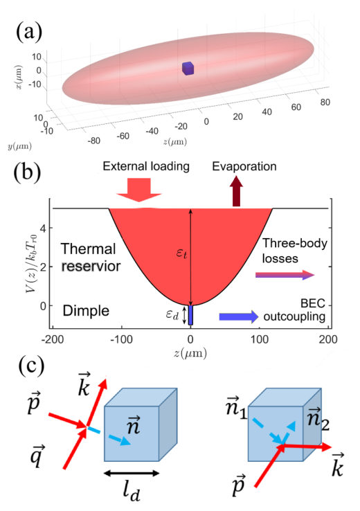
<figcaption class="paper-figure-caption"><b>Fig 1.</b> Figure 1. (a) Schematic of the trap geometry: a localized dimple potential (blue) is embedded in a harmonic thermal reservoir (red). The reservoir density is represented by an ellipsoidal isodensity surface for initial particle number Nr0 = 3×105 and temperature Tr0 = 150 nK. (b) Axial cross section of the trapping potential. Reservoir states occupy the energy range 0 &lt; E &lt; εt, whereas dimple states lie in the interval −εd &lt; E &lt; 0. (c) Collision processes included in the kinetic model: solid red arrows denote reservoir atoms and dashed blue arrows denote dimple atoms.</figcaption>
</figure>
<figure class="paper-figure-card">
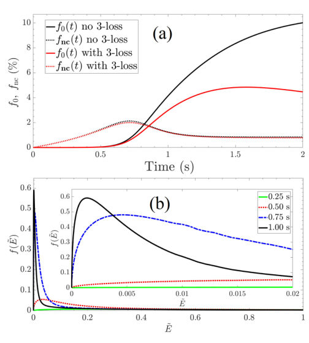
<figcaption class="paper-figure-caption"><b>Fig 2.</b> Figure 2. (a) Time evolution of the condensate fraction f0(t) (solid) and the noncondensed dimple fraction fnc(t) (dotted). Red and black curves correspond to calculations with and without three-body losses. Evaporation is suppressed by tak- ing εt →∞. (b) Energy distribution f( ˜E) of noncondensed atoms in the dimple at selected times for the calculation with three-body losses. The inset resolves the low-energy part of the distribution.</figcaption>
</figure>
<figure class="paper-figure-card">
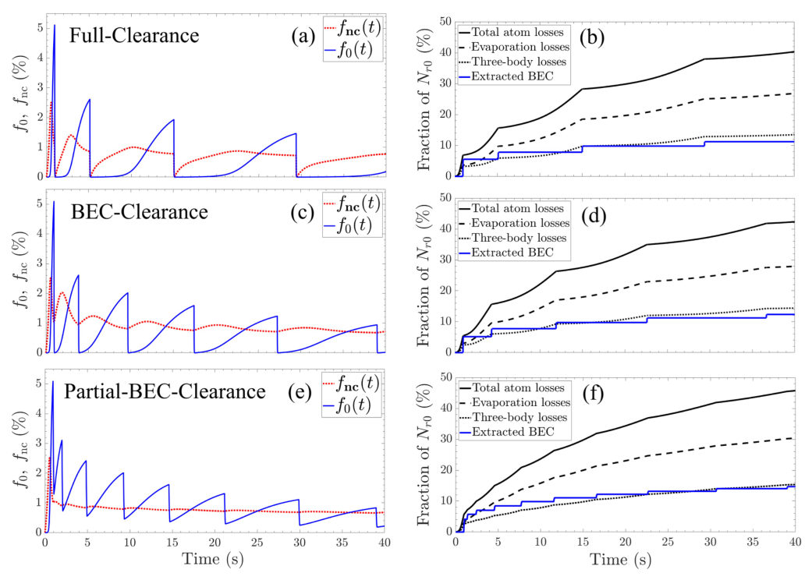
<figcaption class="paper-figure-caption"><b>Fig 3.</b> Figure 3. Repeated condensate extraction without external replenishment. Left panels show the condensate fraction f0(t) and noncondensed dimple fraction fnc(t). Right panels show the cumulative particle balance. The reservoir depth is εt = kB × 750 nK. The critical temperature in the absence of the dimple is Tc = 130 nK. (a),(b) Full-Clearance protocol. (c),(d) BEC-Clearance protocol. (e),(f) Partial-BEC-Clearance protocol.</figcaption>
</figure>
<figure class="paper-figure-card">
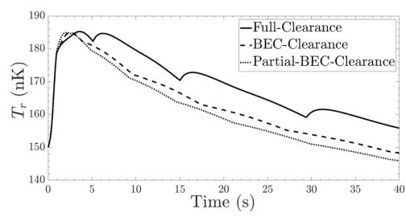
<figcaption class="paper-figure-caption"><b>Fig 4.</b> Figure 4. Reservoir temperature as a function of time for the extraction protocols shown in Fig. 3. Condensate formation initially heats the reservoir, whereas subsequent evaporation from the finite-depth trap gradually lowers the temperature.</figcaption>
</figure>
<figure class="paper-figure-card">
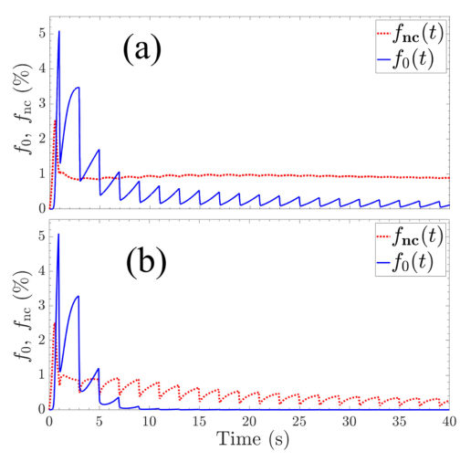
<figcaption class="paper-figure-caption"><b>Fig 5.</b> Figure 5. Fixed-period extraction without external replenish- ment. After the first extraction, subsequent extraction pulses are applied with period Textr = 2 s. Solid blue curves denote the condensate fraction f0(t), and dotted red curves denote the noncondensed dimple fraction fnc(t). (a) Partial-BEC- Clearance protocol with Γ0 = 15 s−1 and Γ = 0 . (b) Modified protocol including partial noncondensed-atom clearance with Γ0 = 15 s−1 and Γ = 20 s−1.</figcaption>
</figure>
</div>

<p><strong>Summary.</strong> The paper models the repeated formation and extraction of BECs from a dimple trap coupled to a thermal reservoir. By comparing different clearance protocols (e.g., partial vs. full removal), it determines that retaining residual atoms is key for efficient cycling. The results establish optimal operating regimes, particularly when continuous external atom replenishment is applied.</p>
<p><strong>Why it may be interesting.</strong> This work provides a detailed kinetic framework for understanding non-equilibrium cycle dynamics in ultracold atomic systems, which is crucial for designing practical quantum simulation or atom-based quantum memory devices.</p>
<details>
<summary>Detailed structure</summary>
<p><strong>Main problem.</strong> The study investigates the dynamics of repeatedly forming and extracting Bose-Einstein condensates (BECs) from a localized dimple trap coupled to a thermal atom reservoir.</p>
<p><strong>Main result.</strong> Partial BEC extraction protocols yield the highest efficiency for repeated condensate production, especially when combined with continuous external replenishment, establishing kinetic pathways for high-duty-cycle operation.</p>
<p><strong>Method.</strong> The research employs a detailed kinetic model that tracks the evolution of condensate and non-condensate populations alongside thermal reservoir dynamics.</p>
<p><strong>Model / system.</strong> The system consists of atoms confined in a dimple trap embedded within a larger, thermal atomic reservoir. The model incorporates pulsed extraction, evaporation, three-body losses, and external atom replenishment rates.</p>
<p><strong>Key observables.</strong> Condensate fraction ($f_0$), non-condensed dimple population ($f_{nc}$), cumulative extracted particle number, and the system's steady-state efficiency ($\eta$).</p>
<p><strong>Important parameters / regimes.</strong> Extraction period ($T_{extr}$), external replenishment rate ($\dot{N}_{in}$), and the relative strength of three-body losses versus Bose-stimulated growth.</p>
<p><strong>Assumptions / limitations.</strong> The thermal cloud is assumed to remain close to equilibrium, and the reservoir size is large compared to the dimple trap dimensions. The model treats extraction/loading as short processes relative to collisional relaxation times.</p>
<p><strong>Figures summary.</strong> Figures illustrate the time evolution of condensate fractions under different clearance protocols (Full, BEC, Partial) both with and without external replenishment, mapping out optimal operating regimes via efficiency heatmaps.</p>
<p><strong>Paper structure.</strong> The paper progresses by first establishing the kinetic model for the coupled system; it then analyzes cyclic dynamics in the absence of replenishment to compare extraction strategies; finally, it introduces continuous replenishment to map out high-efficiency, periodic steady-state operation.</p>
</details>
<details>
<summary>Abstract</summary>
<p>We investigate repeated Bose-Einstein-condensate (BEC) formation and extraction in a dimple trap embedded in a reservoir of thermal atoms using a kinetic model. The model includes pulsed extraction, evaporation, three-body losses, and thermal-atom replenishment. Three extraction protocols are compared: extraction of all atoms from the dimple (BEC and thermal atoms), full and partial extractions of the BEC, but not of the thermal atoms. Residual atoms in the dimple after extraction seed subsequent Bose-stimulated growth and reduce the recovery time between extractions, but also enhance density-dependent losses. For all protocols, repeated extraction of BECs can be achieved without replenishment, but the number of BEC formations is limited by reservoir depletion and heating. With continuous replenishment, the system can reach a periodic steady-state regime, after an initial transient period, controlled by the externally imposed rates of extraction pulses and thermal-atom input. Within the explored parameter range, partial BEC extraction gives the highest efficiency, particularly for short extraction periods and high input rates. These results identify seeding by residual populations of BECs and thermal atoms as a kinetic mechanism for improving repeated condensate production in dimple traps.</p>
</details>
<p><sub><a href="#top">↑ back to top</a></sub></p>

<p><a id="paper-2606.11561"></a></p>
<h3 id="diffusive-relaxation-of-participation-entropy-in-u1-symmetric-dynamics"><a href="http://arxiv.org/abs/2606.11561v1">Diffusive Relaxation of Participation Entropy in U(1)-symmetric Dynamics</a></h3>
<p><strong>Authors:</strong> Hanchen Liu, Tianci Zhou, Xiao Chen<br>
<strong>Type:</strong> theory · <strong>Category:</strong> statistical mechanics · <strong>PDF:</strong> <a href="https://arxiv.org/pdf/2606.11561v1">https://arxiv.org/pdf/2606.11561v1</a><br>
<strong>Analysis basis:</strong> full PDF text, analyzed in chunks
<strong>Topic relevance:</strong> 🔥 <code>entanglement &amp; information structure</code> <strong>4/5</strong> · 🔥 <code>non-equilibrium dynamics</code> <strong>4/5</strong> · <code>analog quantum simulation</code> <strong>3/5</strong> · <code>methods for driven-dissipative</code> <strong>3/5</strong> · <code>non-equilibrium universality</code> <strong>3/5</strong> · <code>scars &amp; prethermalization</code> <strong>3/5</strong> · <code>correlated / nonlocal dissipation</code> <strong>2/5</strong> · <code>driven-dissipative phase transition</code> <strong>2/5</strong> · <code>Keldysh / 2PI / non-Gaussian methods</code> <strong>1/5</strong></p>
<div class="figure-strip-hint">↔ Scroll figures horizontally</div>
<div class="paper-figures-scroll">
<figure class="paper-figure-card">
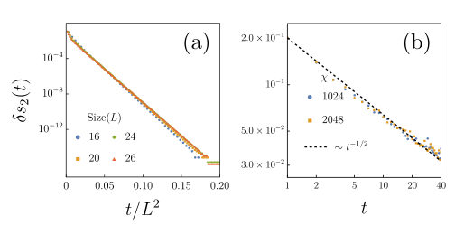
<figcaption class="paper-figure-caption"><b>Fig 1.</b> FIG. 1. Entropy density relaxation in the SSEP brickwork evolution with r = 1/2. Panel (a) shows finite size ex- act evolution data for the N´eel initial condition on periodic chains with L = 16, 20, 24, 26, plotted up to times t ≤0.2L2. Panel (b) shows the corresponding infinite chain calculation obtained using an infinite matrix product state (iMPS) rep- resentation with bond dimensions χ = 1024 and 2048. The dashed guide-to-the-eye indicates the diffusive scaling t−1/2.</figcaption>
</figure>
<figure class="paper-figure-card">
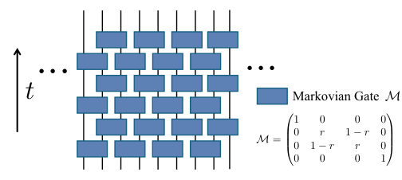
<figcaption class="paper-figure-caption"><b>Fig 2.</b> FIG. 2. Brickwork update pattern for the one dimensional Markov dynamics. The two-site stochastic gate is applied first on one sublattice of nearest neighbor bonds and then on the shifted sublattice, giving one full brickwork time step.</figcaption>
</figure>
<figure class="paper-figure-card">
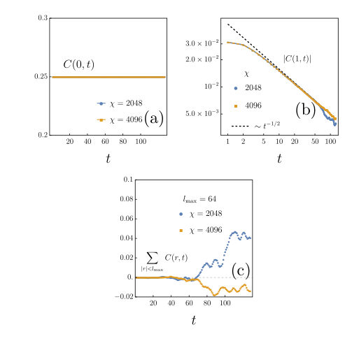
<figcaption class="paper-figure-caption"><b>Fig 3.</b> FIG. 3. Local and conservation diagnostics for the infi- nite chain Markov iMPS calculation, with bond dimension χ = 2048, 4096. Panel (a) shows that the onsite vari- ance C(0, t) quickly reaches the half filled steady state value κ = 1/4, providing an O(1) local source for offsite correla- tions. Panel (b) shows the nearest neighbor absolute con- nected correlation |C(1, t)| with a t−1/2 guide. Panel (c) checks the finite window version of the conservation sum rule P</figcaption>
</figure>
<figure class="paper-figure-card">
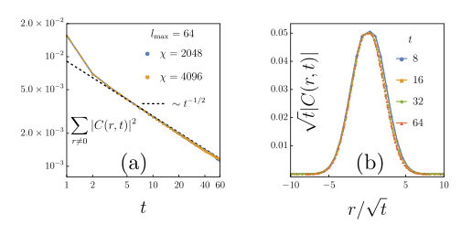
<figcaption class="paper-figure-caption"><b>Fig 4.</b> FIG. 4. Diffusive scaling diagnostics for the r = 1/2 SSEP brickwork evolution with the iMPS method. Panel (a) shows the algebraic decay of the offsite squared correlation sum, with a t−1/2 guide. Panel (b) shows the diffusive collapse of the offsite (r ̸= 0) correlation profile under the scaling variable r/ √</figcaption>
</figure>
<figure class="paper-figure-card">
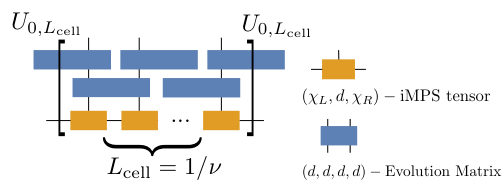
<figcaption class="paper-figure-caption"><b>Fig 5.</b> FIG. 5. Schematic of the infinite chain iMPS implementation. The tensors and brickwork gates are represented within a fi- nite unit cell that is repeated periodically in space. We take the cell size to be the inverse filling factor ν, Lcell = 1/ν. The gates or evolution matrices inside the unit cell are resampled in time, so the calculation keeps temporal disorder while re- placing fully independent spatial disorder by a finite period representative.</figcaption>
</figure>
</div>

<p><strong>Summary.</strong> The paper establishes that U(1) symmetry imposes constraints on the relaxation of Participation Entropy (PE) in quantum many-body systems. It shows that instead of rapid decay, the entropy deficit relaxes diffusively ($\sim t^{-1/2}$) at intermediate times due to conserved charge correlations. This slow relaxation is presented as a generic signature of conservation laws in non-equilibrium dynamics.</p>
<p><strong>Why it may be interesting.</strong> This work provides a concrete mechanism—the persistence of long-lived hydrodynamic modes due to conservation laws—that dictates slow relaxation dynamics for fundamental quantities like PE, which is highly relevant for understanding thermalization in interacting quantum systems.</p>
<details>
<summary>Detailed structure</summary>
<p><strong>Main problem.</strong> The study investigates the slow relaxation dynamics of Participation Entropy (PE) in quantum many-body systems constrained by continuous symmetries, specifically U(1) conservation laws.</p>
<p><strong>Main result.</strong> In the presence of such conservation laws, PE exhibits a universal diffusive relaxation scaling ($\Delta S \sim t^{-1/2}$) at intermediate times, crossing over to an exponential decay ($\exp(-\gamma t/L^2)$) at late times.</p>
<p><strong>Method.</strong> The analysis employs cluster expansions around equilibrium and utilizes tensor network simulations (iMPS) to track the evolution of connected density correlations that govern the entropy deficit.</p>
<p><strong>Model / system.</strong> The research models charge-conserving dynamics, often mapped onto classical processes like the Symmetric Simple Exclusion Process (SSEP), or simulated using random U(1)-symmetric quantum circuits on a 1D chain.</p>
<p><strong>Key observables.</strong> Participation Entropy (PE) deficit ($\Delta S$), connected density correlations ($C(r, t)$), and local density fluctuations ($\delta n_x$).</p>
<p><strong>Important parameters / regimes.</strong> The system size $L$, time $t$, and the degree of randomness/symmetry breaking ($\lambda$ or gate parameters). The scaling regimes are characterized by $1 \ll t \ll L^2$ (diffusive) and $t \gtrsim L^2$ (exponential).</p>
<p><strong>Assumptions / limitations.</strong> The analysis relies on expanding the entropy deficit to quadratic order in density fluctuations, assuming that conservation laws dictate the slow relaxation dynamics.</p>
<p><strong>Figures summary.</strong> Figures illustrate the crossover from algebraic ($t^{-1/2}$) diffusive decay to exponential decay ($\exp(-\gamma t/L^2)$) for both the PE deficit and offsite connected correlations across various randomness strengths.</p>
<p><strong>Paper structure.</strong> The paper progresses by analyzing classical toy models (SSEP), deriving theoretical expansions relating entropy deficits to correlation functions, applying these tools to quantum random circuits, and confirming the universal diffusive scaling in multiple numerical regimes.</p>
</details>
<details>
<summary>Abstract</summary>
<p>Participation entropy (PE) quantifies the spread of a many-body wavefunction across configuration space. While PE relaxes rapidly in generic chaotic systems, we show that $\mathrm{U}(1)$ conservation laws slow it down by imprinting with the slow hydrodynamic modes. Using a cluster expansion around equilibrium, we show that, after local density inhomogeneities decay, the leading PE deficit is dominated by squared connected density correlations. The long time relaxation is therefore controlled by diffusive correlation spreading, giving $ΔS(t)\sim t^{-1/2}$ in the hydrodynamic regime and crossing over to $\sim \exp[-O(t/L^2)]$ when $t\geq L^2$. We confirm this entropy correlation relation using exact computation and infinite system tensor network simulations in various quantum $\mathrm{U}(1)$ conserving circuits. Our results establish PE as a sensitive probe of hydrodynamic memory and suggest that slow relaxation is a generic consequence of conservation laws.</p>
</details>
<p><sub><a href="#top">↑ back to top</a></sub></p>

<p><a id="paper-2606.11784"></a></p>
<h3 id="enhancing-many-body-chaos-via-entropy-injection-from-environment"><a href="http://arxiv.org/abs/2606.11784v1">Enhancing Many-Body Chaos via Entropy Injection from Environment</a></h3>
<p><strong>Authors:</strong> Yuke Zhang, Wenbo Zhou, Pengfei Zhang<br>
<strong>Type:</strong> theory · <strong>Category:</strong> statistical mechanics · <strong>PDF:</strong> <a href="https://arxiv.org/pdf/2606.11784v1">https://arxiv.org/pdf/2606.11784v1</a><br>
<strong>Analysis basis:</strong> full PDF text, analyzed in chunks
<strong>Topic relevance:</strong> 🔥 <code>entanglement &amp; information structure</code> <strong>4/5</strong> · 🔥 <code>non-equilibrium dynamics</code> <strong>4/5</strong> · <code>Keldysh / 2PI / non-Gaussian methods</code> <strong>3/5</strong> · <code>correlated / nonlocal dissipation</code> <strong>3/5</strong> · <code>driven-dissipative phase transition</code> <strong>3/5</strong> · <code>methods for driven-dissipative</code> <strong>3/5</strong> · <code>non-equilibrium universality</code> <strong>2/5</strong> · <code>Kondo &amp; dissipative impurity</code> <strong>1/5</strong> · <code>analog quantum simulation</code> <strong>1/5</strong> · <code>scars &amp; prethermalization</code> <strong>1/5</strong></p>
<div class="figure-strip-hint">↔ Scroll figures horizontally</div>
<div class="paper-figures-scroll">
<figure class="paper-figure-card">
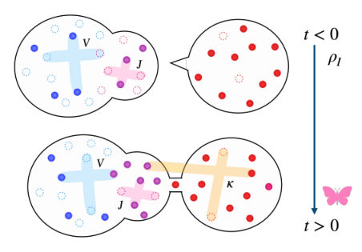
<figcaption class="paper-figure-caption"><b>Fig 1.</b> FIG. 1. Schematic illustration of the setup. Filled and empty circles represent occupied and unoccupied modes, respec- tively, with J denoting the intra-system coupling strength. For t &lt; 0, the system is coupled to a single bath with strength V . At t = 0, a second bath is activated with coupling strength κ, inducing a change in the system’s density accompanied by entropy injection. At later times (t &gt; 0), the system relaxes into a steady state, where the quantum Lyapunov exponent is evaluated as a signature of the quantum butterfly effect.</figcaption>
</figure>
<figure class="paper-figure-card">
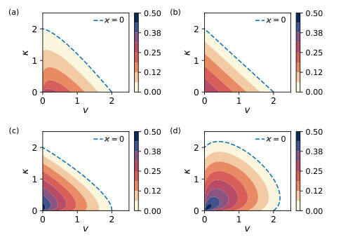
<figcaption class="paper-figure-caption"><b>Fig 2.</b> FIG. 2. Contour plots of the quantum Lyapunov exponent for the complex Brownian SYK model with the original SE2 coupling (3), for (a) m = 0.1, (b) m = 0.2, (c) m = 0.48, and (d) m = 0.8. We fix n = 0.2 and J = 1 in all panels. The dashed lines denote the phase boundary between the scram- bling phase and the dissipative phase.</figcaption>
</figure>
<figure class="paper-figure-card">
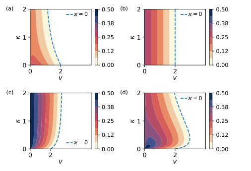
<figcaption class="paper-figure-caption"><b>Fig 3.</b> FIG. 3. Contour plots of the quantum Lyapunov exponent for the complex Brownian SYK model with the pair-hopping coupling (13), for (a) m = 0.1, (b) m = 0.2, (c) m = 0.48, and (d) m = 0.8. We fix n = 0.2 and J = 1 in all panels. The dashed lines denote the phase boundary between the scram- bling phase and the dissipative phase.</figcaption>
</figure>
</div>

<p><strong>Summary.</strong> The paper explores how coupling a quantum system to an environment can drive it into a non-equilibrium state by injecting entropy. By analyzing the complex Brownian SYK model, the authors demonstrate that this process enhances many-body chaos, providing a tunable mechanism for controlling quantum scrambling beyond simple dissipation effects.</p>
<p><strong>Why it may be interesting.</strong> This work provides a concrete, controllable mechanism—tuning entropy flow—to actively enhance quantum chaos in many-body systems, which is highly relevant for understanding non-equilibrium dynamics far from thermal equilibrium.</p>
<details>
<summary>Detailed structure</summary>
<p><strong>Main problem.</strong> To investigate entropy injection from an environment as a mechanism that enhances many-body chaos, contrasting with previous work suggesting environmental coupling can reduce complexity growth.</p>
<p><strong>Main result.</strong> Entropy injection into the system enlarges the effective Hilbert space dimension, which demonstrably enhances the quantum Lyapunov exponent and promotes many-body chaos in the solvable complex Brownian SYK model.</p>
<p><strong>Method.</strong> The analysis uses large-N expansion techniques on Green's functions governed by a Kadanoff-Baym equation to derive an exact quantum Boltzmann equation for particle number evolution and calculate OTOCs.</p>
<p><strong>Model / system.</strong> The system is modeled as complex fermions coupled sequentially to two environments ($E_1$ and $E_2$), realized via a solvable complex Brownian Sachdev-Ye-Kitaev (SYK) model. The coupling drives the system into a non-equilibrium steady state.</p>
<p><strong>Key observables.</strong> Quantum Lyapunov exponent ($\lambda$ or $\kappa$), Out-of-Time-Ordered Correlators (OTOCs), and the accessible effective Hilbert space dimension ($e_S$).</p>
<p><strong>Important parameters / regimes.</strong> Coupling strengths ($\gamma_1, \gamma_2$) and environment parameters ($n, m$), which define different dynamical regimes.</p>
<p><strong>Assumptions / limitations.</strong> The analysis relies on large-N expansion techniques and the use of specific coupling structures (e.g., pair-hopping) to maintain solvability.</p>
<p><strong>Figures summary.</strong> Figures show contour plots of the quantum Lyapunov exponent across parameter space for both standard and modified couplings, illustrating phase boundaries between scrambling and dissipative regimes.</p>
<p><strong>Paper structure.</strong> The paper progresses from establishing the physical setup (entropy injection vs. dissipation), deriving the governing equations (Boltzmann/Kadanoff-Baym), calculating key diagnostics like OTOCs and $\lambda$, and finally comparing results across different coupling mechanisms to establish control over chaos enhancement.</p>
</details>
<details>
<summary>Abstract</summary>
<p>In closed quantum systems, local information spreads throughout the entire system and becomes highly complex under unitary evolution. In contrast, when the system is embedded in an environment, system-environment coupling can transfer information from the system into the environment, thereby reducing the rate of complexity growth within the system. This leads to the environment-induced scrambling transition established in previous works. In this work, we identify entropy injection from the environment as a different physical process that instead enhances many-body chaos. Our setup consists of coupling a system that is already in equilibrium with one environment to another environment, which serves as an entropy reservoir and drives the system into a non-equilibrium state. When entropy flows into the system through either heat transfer or particle transfer, the effective Hilbert space explored by the system enlarges, a mechanism that can enhance many-body chaos. We explicitly demonstrate this idea by constructing a solvable complex Brownian SYK model, in which both the relaxation toward the steady state and the steady-state quantum Lyapunov exponent can be computed analytically. Our results provide a controllable mechanism for tuning quantum scrambling through entropy flow in quantum many-body systems coupled to environments.</p>
</details>
<p><sub><a href="#top">↑ back to top</a></sub></p>

<p><a id="paper-2606.12053"></a></p>
<h3 id="heisenberg-langevin-theory-of-an-exciton-mirror"><a href="http://arxiv.org/abs/2606.12053v1">Heisenberg-Langevin theory of an exciton mirror</a></h3>
<p><strong>Authors:</strong> Sergueï V. Andreev<br>
<strong>Type:</strong> theory · <strong>Category:</strong> other · <strong>PDF:</strong> <a href="https://arxiv.org/pdf/2606.12053v1">https://arxiv.org/pdf/2606.12053v1</a><br>
<strong>Analysis basis:</strong> full PDF text, analyzed in chunks
<strong>Topic relevance:</strong> 🔥 <code>driven-dissipative phase transition</code> <strong>4/5</strong> · <code>Keldysh / 2PI / non-Gaussian methods</code> <strong>3/5</strong> · <code>correlated / nonlocal dissipation</code> <strong>3/5</strong> · <code>correlated cavity matter</code> <strong>3/5</strong> · <code>methods for driven-dissipative</code> <strong>3/5</strong> · <code>Tavis-Cummings &amp; cavity-many-emitter</code> <strong>2/5</strong> · <code>non-equilibrium universality</code> <strong>2/5</strong> · <code>analog quantum simulation</code> <strong>1/5</strong> · <code>interference shaping light</code> <strong>1/5</strong> · <code>non-equilibrium dynamics</code> <strong>1/5</strong> · <code>superradiant laser</code> <strong>1/5</strong></p>
<div class="figure-strip-hint">↔ Scroll figures horizontally</div>
<div class="paper-figures-scroll">
<figure class="paper-figure-card">
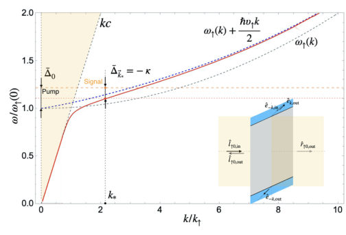
<figcaption class="paper-figure-caption"><b>Fig 1.</b> Figure 1. The dispersion of the spin-up exciton ω′ ↑(k) in a strong transverse magnetic field. The following exemplary values of parameters have been used: ℏk2 ↑/[2mω↑(0)] = 0.01 and υ↑↑(0)/c = 0.1. Grey dashed lines show the mechanical exciton dispersion ω↑(k) and the boundary of the ”light cone”. Blue dashed line depicts the large-k asymptote of ω′ ↑(k). A steady-state population of excitons at k = 0 excited by a co- herent monochromatic wave (detuned by ¯∆0) may produce a phase-conjugated guided polariton wave beyond the light cone. The phase-conjugated wave may be greatly amplified by the pump, provided either the absolute value of the wave vector −k∗of the probe wave or the detuning...</figcaption>
</figure>
</div>

<p><strong>Summary.</strong> This paper develops a comprehensive Heisenberg-Langevin theory for an exciton mirror system, incorporating crucial effects like retardation and long-range exchange. It predicts that the system's optical response is highly nonlinear, exhibiting bistability. Depending on the driving intensity relative to a threshold, the mirror can either generate twin polaritons or display phase-conjugating reflection.</p>
<p><strong>Why it may be interesting.</strong> This work bridges quantum optics (parametric amplification, cavity physics) with condensed matter excitonics, providing a detailed theoretical framework for nonlinear light-matter interactions in 2D materials.</p>
<details>
<summary>Detailed structure</summary>
<p><strong>Main problem.</strong> Developing a Heisenberg-Langevin theory for an exciton mirror that accounts for retardation and long-range electron-hole exchange, while investigating phenomena like optical bistability.</p>
<p><strong>Main result.</strong> The system exhibits optical parametric generation of twin polariton beams above a critical threshold, and acquires phase-conjugating properties below it.</p>
<p><strong>Method.</strong> The analysis uses the input–output formalism within a Heisenberg-Langevin framework derived from the second-quantized electric-dipole Hamiltonian.</p>
<p><strong>Model / system.</strong> The system is an exciton mirror utilizing 2D excitons in semiconductor monolayers, modeled by coupled Heisenberg-Langevin equations for the exciton operators. The theory incorporates retardation and long-range exchange effects.</p>
<p><strong>Key observables.</strong> Optical bistability hysteresis curves, phase-conjugating reflection coefficients, and the onset of parametric generation (twin polaritons).</p>
<p><strong>Important parameters / regimes.</strong> Threshold densities ($n^{(th)}_0$), coupling strengths ($g$), decay rates ($\gamma$), and external magnetic fields.</p>
<p><strong>Assumptions / limitations.</strong> Approximations include assuming $\psi_{1s}(0)$ is constant, using the Dirac delta function for the envelope function, and neglecting retardation effects at large momentum.</p>
<p><strong>Figures summary.</strong> Figure 1 illustrates the dispersion relation of spin-up excitons in a strong transverse magnetic field, showing the light cone structure.</p>
<p><strong>Paper structure.</strong> The paper develops the theory by first establishing the coupled Heisenberg-Langevin equations. It then analyzes the mean-field dynamics to derive conditions for optical bistability and instability thresholds, culminating in predictions for parametric generation and phase conjugation.</p>
</details>
<details>
<summary>Abstract</summary>
<p>We develop a Heisenberg-Langevin theory of an exciton mirror accounting for the retardation and the long-range electron-hole exchange. A particular case of a strong transverse magnetic field is analyzed in detail. The optical bistability due to repulsion between the excitons inside the light cone appears to be prone to a modulational instability towards the non-radiative surface polariton modes. Above the corresponding threshold, the pumped 2D exciton gas acts as an optical parametric generator of twin polariton beams. Conversely, below the threshold, the mirror acquires the phase-conjugating properties.</p>
</details>
<p><sub><a href="#top">↑ back to top</a></sub></p>

<p><a id="paper-2606.11950"></a></p>
<h3 id="perspective-the-physics-of-active-solids-from-hamiltonians-to-active-matter-models"><a href="http://arxiv.org/abs/2606.11950v1">Perspective: The Physics of Active Solids -- From Hamiltonians to Active Matter Models</a></h3>
<p><strong>Authors:</strong> Antik Bhattacharya, Jürgen Horbach, Smarajit Karmakar<br>
<strong>Type:</strong> theory · <strong>Category:</strong> statistical mechanics · <strong>PDF:</strong> <a href="https://arxiv.org/pdf/2606.11950v1">https://arxiv.org/pdf/2606.11950v1</a><br>
<strong>Analysis basis:</strong> full PDF text, analyzed in chunks
<strong>Topic relevance:</strong> 🔥 <code>non-equilibrium dynamics</code> <strong>4/5</strong> · 🔥 <code>non-equilibrium universality</code> <strong>4/5</strong> · <code>Keldysh / 2PI / non-Gaussian methods</code> <strong>3/5</strong> · <code>driven-dissipative phase transition</code> <strong>3/5</strong> · <code>methods for driven-dissipative</code> <strong>3/5</strong> · <code>scars &amp; prethermalization</code> <strong>2/5</strong> · <code>Frenkel-Kontorova</code> <strong>1/5</strong> · <code>analog quantum simulation</code> <strong>1/5</strong> · <code>correlated / nonlocal dissipation</code> <strong>1/5</strong> · <code>correlated cavity matter</code> <strong>1/5</strong> · <code>exotic spin models in light-matter</code> <strong>1/5</strong></p>
<div class="figure-strip-hint">↔ Scroll figures horizontally</div>
<div class="paper-figures-scroll">
<figure class="paper-figure-card">
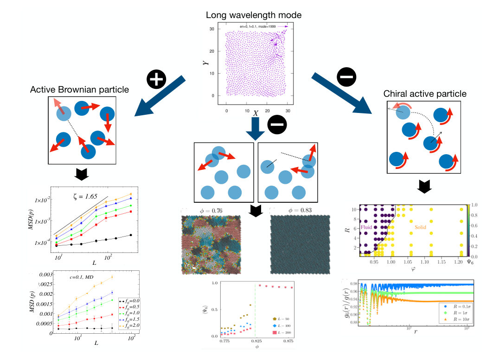
<figcaption class="paper-figure-caption"><b>Fig 1.</b> FIG. 1. Anomalous Mermin-Wagner-Hohenberg (MWH) fluctuations in active systems: This schematic illustrates how positive and negative coupling between active driving and long wavelength modes affects system behavior. On the left, Active Brownian Particles (ABPs) couple positively with long wavelength modes, resulting in increased density fluctuations and destabilization of active solids even in three dimensions (3D). In the middle, we show negative coupling for another type of activity, in which particles receive a random kick whenever they come into contact, at zero temperature. This leads to strong suppression of density fluctuations and stabilization of crystalline positional order even...</figcaption>
</figure>
<figure class="paper-figure-card">
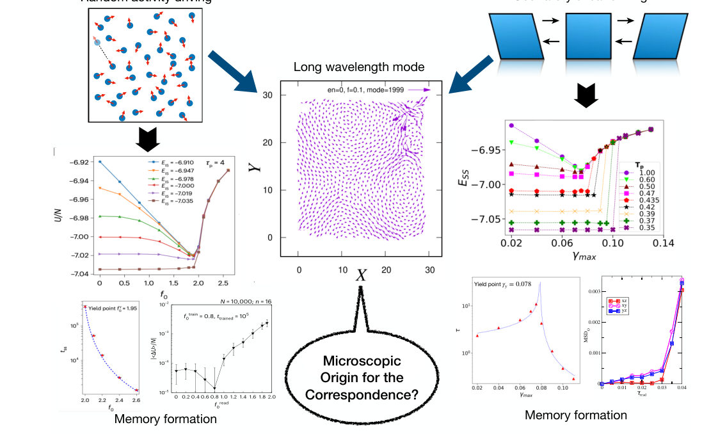
<figcaption class="paper-figure-caption"><b>Fig 2.</b> FIG. 2. Activity-Oscillatory Shear Correspondence: This schematic shows the observed equivalence between oscillatory shear response of an amorphous solids and response under active particle doping. In the left, we demonstrated the dynamical response and annealing effects obtained using active particle doping. The Energy-activity state diagram shows that annealing effects can be obtained for poorly annealed glasses, but below a critical energy, further annealing can not be achieved via active particle doping. The phenomena also shows a growth of a critical timescale and memory formation (see the text for details). On the right, we show similar dynamical responses of an amorphous solid under...</figcaption>
</figure>
</div>

<p><strong>Summary.</strong> This perspective article tackles the theoretical challenges of dense active matter by proposing the use of Active Hamiltonian models as a unifying framework. The authors establish a key hypothesis: that the effects of self-propulsion are mathematically equivalent to those induced by external oscillatory shear in amorphous solids. This correspondence suggests universal principles govern energy injection and structural memory formation in non-equilibrium materials.</p>
<p><strong>Why it may be interesting.</strong> The concept of mapping non-equilibrium dynamics (active systems) onto Hamiltonian frameworks provides powerful analogies for understanding energy dissipation and structural relaxation in complex many-body systems, relevant to open quantum system modeling.</p>
<details>
<summary>Detailed structure</summary>
<p><strong>Main problem.</strong> Understanding the profound theoretical challenges posed by dense active matter, such as 'active glasses and active solids,' where energy consumption drives non-equilibrium behavior.</p>
<p><strong>Main result.</strong> The paper proposes that developing active Hamiltonian models allows for elucidating a universal correspondence between activity-induced annealing and mechanical oscillatory shear in amorphous solids.</p>
<p><strong>Method.</strong> Developing an Active Hamiltonian (AH) framework to treat non-equilibrium systems by mapping them onto equilibrium reference states, supplemented by comparative studies of rheology.</p>
<p><strong>Model / system.</strong> The study focuses on active matter systems like Active Brownian Particles (ABPs) and amorphous solids. The theoretical tool is the AH model, which extends standard Hamiltonians to incorporate self-propelling forces and internal degrees of freedom (like spin).</p>
<p><strong>Key observables.</strong> Enhanced Mermin-Wagner-Hohenberg (MWH) fluctuations, phonon dispersion relations ($\omega(q)$), rheological response (yielding behavior), and memory signatures.</p>
<p><strong>Important parameters / regimes.</strong> Chirality ($\Omega$), coupling strength between active forces and elastic modes, and the comparison between random activity driving versus deterministic oscillatory shear strain ($\gamma(t)$).</p>
<p><strong>Assumptions / limitations.</strong> The core hypothesis is that the physics of dense active matter can be understood by treating it via an AH framework, which allows for mapping non-equilibrium dynamics onto equilibrium concepts.</p>
<p><strong>Figures summary.</strong> Figure 1 illustrates how coupling parameters control MWH fluctuations in ABPs. Figure 2 compares annealing effects from active particle doping versus oscillatory shear, showing identical critical energy thresholds and memory encoding mechanisms.</p>
<p><strong>Paper structure.</strong> The paper progresses by first identifying the limitations of current theories for dense active matter. It then introduces the AH formalism to build a theoretical bridge. The core argument is built around demonstrating the equivalence between activity-driven processes and mechanical shearing via cross-memory protocols, culminating in a roadmap for future investigations.</p>
</details>
<details>
<summary>Abstract</summary>
<p>The physics of active matter, wherein constituent particles consume energy to generate autonomous motion, has revolutionized non-equilibrium statistical mechanics. While a large body of work has successfully elucidated the behavior of dilute active systems, the dense regime -- characterized by ``active glasses and active solids'' -- presents profound challenges that defy conventional theoretical frameworks. Recent observations reveal two striking features in these dense systems: an apparent enhancement of Mermin-Wagner-Hohenberg (MWH) fluctuations leading to anomalous long-wavelength density fluctuations, and a remarkable correspondence between activity-induced annealing and annealing via oscillatory shear. In this perspective article, we propose a novel approach toward a deeper understanding of dense active matter: by developing active Hamiltonian models as equilibrium reference frameworks, we map out pathways toward non-equilibrium active systems. This strategy allows us to elucidate both the correspondence between driven and active systems and the enhanced MWH fluctuations, which likely arise from a strong coupling between spatially random active forces and long-wavelength density (phonon) modes. We outline a comprehensive roadmap employing complementary approaches, including the active Hamiltonian formalism, comparative studies of oscillatory shear in active and passive solids, and investigations of chiral active matter. Establishing this activity-oscillatory shear correspondence across diverse systems is essential to demonstrate its universality, reveal the underlying large-scale emergent physics, and place our hypothesis on a firmer theoretical ground.</p>
</details>
<p><sub><a href="#top">↑ back to top</a></sub></p>

<p><a id="paper-2606.12020"></a></p>
<h3 id="experimental-tabletop-petz-recovery-of-a-photonic-qubit"><a href="http://arxiv.org/abs/2606.12020v1">Experimental Tabletop Petz recovery of a photonic qubit</a></h3>
<p><strong>Authors:</strong> Hui Li, Jinyan Chen, Yue Pan, Liang Xu, Minjeong Song, Valerio Scarani, Lijian Zhang<br>
<strong>Type:</strong> experiment · <strong>Category:</strong> quantum information and computing · <strong>PDF:</strong> <a href="https://arxiv.org/pdf/2606.12020v1">https://arxiv.org/pdf/2606.12020v1</a><br>
<strong>Analysis basis:</strong> full PDF text, analyzed in chunks
<strong>Topic relevance:</strong> 🔥 <code>QC/QI experiment</code> <strong>4/5</strong> · <code>methods for driven-dissipative</code> <strong>3/5</strong> · <code>quantum optics experiment</code> <strong>3/5</strong> · <code>analog quantum simulation</code> <strong>2/5</strong> · <code>correlated / nonlocal dissipation</code> <strong>2/5</strong> · <code>entanglement &amp; information structure</code> <strong>2/5</strong> · <code>measurement-induced transitions</code> <strong>2/5</strong> · <code>quantum measurements</code> <strong>2/5</strong> · <code>driven-dissipative phase transition</code> <strong>1/5</strong> · <code>interference shaping light</code> <strong>1/5</strong> · <code>non-equilibrium dynamics</code> <strong>1/5</strong></p>
<div class="figure-strip-hint">↔ Scroll figures horizontally</div>
<div class="paper-figures-scroll">
<figure class="paper-figure-card">
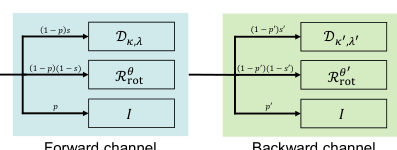
<figcaption class="paper-figure-caption"><b>Fig 1.</b> FIG. 1. Schematic diagram illustrating the forward channel and the corresponding Petz recovery map acting as the backward channel. Both channels consist of three parts: identity channel I, rotation channel Rrot and the dissipation channel Dκ,λ.</figcaption>
</figure>
<figure class="paper-figure-card">
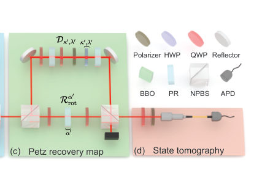
<figcaption class="paper-figure-caption"><b>Fig 2.</b> FIG. 2. Experimental setup for implementing the forward channel and the Petz recovery map. The setup contains four parts: (a) state preparation, (b) forward channel, (c) Petz recovery map and (d) state tomography. Experimentally, the photons are generated via the spontaneous parametric down-conversion (SPDC) and collected by the APD. The identity part I and the rotation part Rπ/2 rot (Rθ rot) of the forward channel (Petz recovery map) are combined and implemented as a single new rotation operation Rα rot (Rα′ rot) (see Section D for detailed derivation). The values of κ(′), λ(′) and α(′) are determined by adjusting the angle of the corresponding HWP and the thickness of the PR,...</figcaption>
</figure>
<figure class="paper-figure-card">
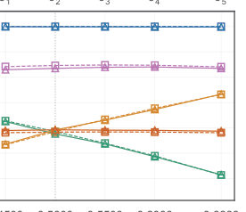
<figcaption class="paper-figure-caption"><b>Fig 3.</b> FIG. 3. Experimental performance of the Petz recovery map. (A) Recovery trajectories on the Bloch sphere for the reference state σ2. Only σ2 is shown here, for simplicity, as maps corresponding to other reference states (σ1, σ3, σ4, σ5) exhibit similar trajectories. (B) Recovery fidelity F of various input states across different Petz recovery map for different reference states. In both panels, circles with different colors distinguish the input states (ρH, ρV, ρD, ρR) with the star specifically indicating the reference state. Squares with dashed lines and triangles with solid lines represent the theoretical and experimental recovered states, respectively. Error bars in panel B are smaller...</figcaption>
</figure>
</div>

<p><strong>Summary.</strong> The paper experimentally realizes the Petz recovery map for photonic qubits to combat information loss from decoherence. By showing that this recovery process can be implemented using the same physical hardware as the noise itself, they demonstrate a resource-efficient method for mitigating quantum information decay in tabletop setups.</p>
<p><strong>Why it may be interesting.</strong> This work provides a concrete, resource-efficient experimental platform for implementing quantum error mitigation techniques (like partial recovery) directly on photonic qubits, which is highly relevant for scalable quantum communication and computation.</p>
<details>
<summary>Detailed structure</summary>
<p><strong>Main problem.</strong> The work addresses the challenge of partially recovering quantum information lost during open system evolution (decoherence/dissipation) using the Petz recovery map.</p>
<p><strong>Main result.</strong> They experimentally demonstrated 'tabletop reversibility,' showing that the Petz recovery map can be implemented using the same photonic devices as the forward dissipative evolution, resource-efficiently mitigating information loss.</p>
<p><strong>Method.</strong> The authors used spontaneous parametric down-conversion to generate photonic qubits and employed state tomography alongside fidelity/trace distance measurements to validate the channel reconstruction.</p>
<p><strong>Model / system.</strong> The system uses photonic qubits encoded in photon polarization. The dynamics are modeled by CPTP quantum channels, including tunable decoherence and dissipation components.</p>
<p><strong>Key observables.</strong> State Fidelity ($F$) and Trace Distance ($T$), used to quantify the success of information recovery for various input states ($
ho_H, 
ho_V, 
ho_D, 
ho_R$).</p>
<p><strong>Important parameters / regimes.</strong> Forward channel parameters $(p, s, 	heta, \kappa, \lambda)$ and the reference state parameter $r$. The operational range for $r$ is constrained by theoretical derivations.</p>
<p><strong>Assumptions / limitations.</strong> The analysis assumes that the Petz recovery map can be mathematically mapped onto a structure analogous to the forward channel, allowing for physical implementation using existing hardware components.</p>
<p><strong>Figures summary.</strong> Figure 1 schematically compares the forward and recovery channels. Figure 2 details the experimental setup (state prep, forward channel, recovery map). Figure 3 shows Bloch sphere trajectories and fidelity across different reference states. Table I quantifies performance metrics.</p>
<p><strong>Paper structure.</strong> The paper moves from theoretical derivation of the Petz map structure using Choi matrices to establishing parameter relationships, culminating in an experimental realization demonstrating that the required channels can be implemented with minimal additional resources.</p>
</details>
<details>
<summary>Abstract</summary>
<p>The quantum information lost in open evolutions cannot be fully recovered, but partial recovery is possible. The Petz recovery map guarantees almost optimal recovery, notably if the chosen reference state is close to the real one. This map has been widely used in theoretical studies, but has been the object of only a handful of experimental realisations, typically under a single fixed noise model. In this work, we describe and implement the Petz recovery map for a versatile class of qubit channels with tunable decoherence and dissipation. The setup we realize is also the first experimental example of ``tabletop reversibility'': for a good range of choices of the reference state, the Petz recovery map can be implemented with the same devices as the forward dissipative evolution, whose effect it is partially undoing. Our results demonstrate that the Petz recovery map can be resource-efficiently realized without requiring complex ancillary resources, providing a feasible pathway for mitigating information loss in quantum systems.</p>
</details>
<p><sub><a href="#top">↑ back to top</a></sub></p>

<p><a id="paper-2606.11947"></a></p>
<h3 id="controlled-ion-ion-interactions-and-cavity-enhanced-emission-of-a-coherent-dinuclear-eumath111math-complex"><a href="http://arxiv.org/abs/2606.11947v1">Controlled ion-ion interactions and cavity-enhanced emission of a coherent dinuclear Eu$^{3+}$ complex</a></h3>
<p><strong>Authors:</strong> Evgenij Vasilenko, Vishnu Unni Chorakkunnath, Barbora Brachnakova, Nicholas Lester Jobbitt, Senthil Kumar Kuppusamy, David Hunger, Mario Ruben<br>
<strong>Type:</strong> both · <strong>Category:</strong> other · <strong>PDF:</strong> <a href="https://arxiv.org/pdf/2606.11947v1">https://arxiv.org/pdf/2606.11947v1</a><br>
<strong>Analysis basis:</strong> full PDF text, analyzed in chunks
<strong>Topic relevance:</strong> 🔥 <code>Tavis-Cummings &amp; cavity-many-emitter</code> <strong>4/5</strong> · 🔥 <code>quantum optics experiment</code> <strong>4/5</strong> · <code>analog quantum simulation</code> <strong>3/5</strong> · <code>correlated cavity matter</code> <strong>3/5</strong> · <code>QC/QI experiment</code> <strong>2/5</strong> · <code>Dicke superradiance</code> <strong>1/5</strong> · <code>correlated / nonlocal dissipation</code> <strong>1/5</strong> · <code>driven-dissipative phase transition</code> <strong>1/5</strong> · <code>entanglement &amp; information structure</code> <strong>1/5</strong> · <code>interference shaping light</code> <strong>1/5</strong> · <code>superradiant laser</code> <strong>1/5</strong></p>
<div class="figure-strip-hint">↔ Scroll figures horizontally</div>
<div class="paper-figures-scroll">
<figure class="paper-figure-card">
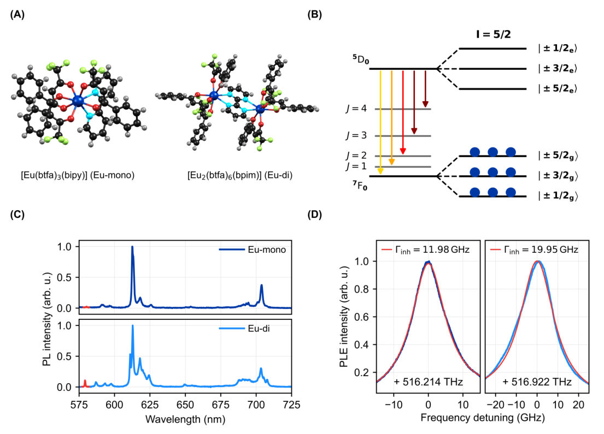
<figcaption class="paper-figure-caption"><b>Fig 1.</b> Figure 1: Photoluminescence properties of the mononuclear and dinuclear Eu3+ complexes. (A): Molecular structures of Eu-mono (left) and Eu-di (right). (B): Energy-level scheme of Eu3+ showing the relevant radiative decay channels from the 5D0 excited state into the 7FJ manifold as observed in the emission spectra. (C): Room-temperature photoluminescence spectra of Eu-mono (upper panel) and Eu-di (lower panel). The dinuclear complex shows a significantly higher branching ratio of the coherent 5D0 → 7F0 transition, which is highlighted in red in the spectra. (D): Photolu- minescence excitation spectra recorded at about 100 mK, revealing the inhomogeneous broadening of the 5D0 → 7F0...</figcaption>
</figure>
<figure class="paper-figure-card">
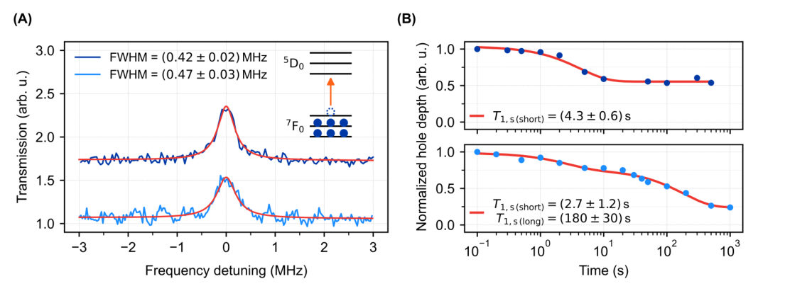
<figcaption class="paper-figure-caption"><b>Fig 2.</b> Figure 2: Spectral hole burning and hyperfine state lifetime. (A): Absorption-based spectral hole burning mea- surements for both complexes, shown with a vertical offset for clarity. Lorentzian fits yield full width at half maximum (FWHM) linewidths of 0.42(2) MHz for Eu-mono and 0.47(3) MHz for Eu-di. (B): Hole depth evolution for both com- plexes. Eu-mono (upper panel) exhibits a single-exponential decay with a relaxation time of 4.3(6) s, and no further decay within the 500 s measurement window, suggesting hour-long spin lifetime. Eu-di (lower panel) shows a bi-exponential decay with time constants of 2.7(12) s and 180(30) s.</figcaption>
</figure>
<figure class="paper-figure-card">
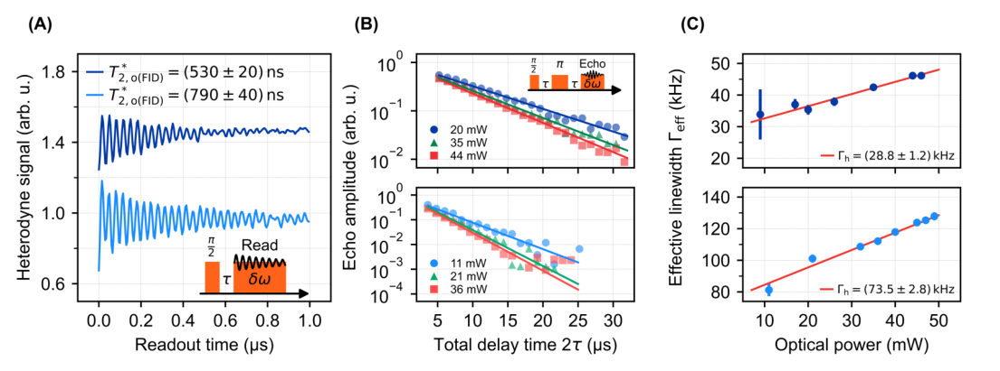
<figcaption class="paper-figure-caption"><b>Fig 3.</b> Figure 3: Optical coherence measurements. (A): Optical free-induction decay measurements obtained using a π/2 pulse followed by a heterodyne readout pulse. The two traces are vertically offset for clarity and yield optical dephasing times of T ∗ 2,o(FID) = 530(20) ns for Eu-mono and T ∗ 2,o(FID) = 790(40) ns for Eu-di. (B): Two-pulse photon echo decays recorded at different excitation powers, with three power levels shown in each panel. Increasing optical power acceler- ates the echo decay and reduces the optical coherence time T2,o. The longest observed echo decays are approximately 9 µs for Eu-mono and 4 µs for Eu-di. (C): Effective homogeneous linewidth Γeff as a function of excitation...</figcaption>
</figure>
<figure class="paper-figure-card">

<figcaption class="paper-figure-caption"><b>Fig 4.</b> Figure 4: Probing ion-ion interactions via controlled excitation of a sub-ensemble. (A): Pulse sequence used to probe ion-ion interactions (top panel) and schematic illustration of the control-target ion configuration (bottom panel). A frequency-selective control pulse (red pulse) is applied to a subset of ions at frequency ωc, while the optical coherence of spectrally distinct target ions at ωt is monitored using a two-pulse photon echo sequence (orange pulses). The control and target ions are represented as effective three-level systems with ground states |0⟩, |1⟩and optically excited state |e⟩. The interaction between control and target ions is described by the dipole–dipole coupling...</figcaption>
</figure>
<figure class="paper-figure-card">

<figcaption class="paper-figure-caption"><b>Fig 5.</b> Figure 5: Purcell enhancement of the coherent transition. (A): Schematic illustration of the fiber-based micro- cavity setup employed in this work. (B): Fitted cavity resonance in the presence of the thin-film doped with Eu-di. The second polarization mode visible at a frequency detuning of 2.4 GHz arises from the slight asymmetry in the concave pro- file of the fiber. (C): Purcell enhancement of the coherent 5D0 → 7F0 transition at room temperature (blue), and at 6 K (green).</figcaption>
</figure>
</div>

<p><strong>Summary.</strong> The research investigates $    ext{Eu}^{3+}$ molecular complexes to create robust platforms for quantum information processing. By synthesizing and spectroscopically characterizing mononuclear and dinuclear variants, the authors demonstrated long coherence times and controlled ion interactions. Crucially, they enhanced emission by coupling the complex into an optical microcavity, proving its viability as a tunable solid-state qubit material.</p>
<p><strong>Why it may be interesting.</strong> This work directly addresses the challenge of creating solid-state quantum emitters with controllable coupling strengths by using molecular chemistry to engineer inter-ion distances, which is central to building scalable quantum processors in AMO physics.</p>
<details>
<summary>Detailed structure</summary>
<p><strong>Main problem.</strong> The research aims to develop molecular rare-earth ion complexes as chemically tunable, scalable building blocks for multi-qubit quantum architectures.</p>
<p><strong>Main result.</strong> The study demonstrated long optical coherence times ($T_{2,	ext{o}}$ up to $9 \mu	ext{s}$) and achieved a significant 380-fold emission enhancement by integrating the dinuclear complex into an optical microcavity.</p>
<p><strong>Method.</strong> A combination of advanced cryogenic ensemble spectroscopy (SHB, Photon Echo) was used to measure coherence times and ion interactions, complemented by cavity QED measurements for Purcell enhancement.</p>
<p><strong>Model / system.</strong> The system involves mononuclear and dinuclear $ ext{Eu}^{3+}$ molecular complexes. The study models the interaction between these ions using dipole-dipole coupling and probes quantum coherence via time-domain spectroscopy techniques.</p>
<p><strong>Key observables.</strong> Optical coherence times ($T_{2,	ext{o}}$), inhomogeneous linewidth ($\Gamma_{	ext{inh}}$), emission enhancement factor (Purcell factor $    ext{F}_{    ext{eff}}   ext{P}$), and interaction-induced dephasing rates ($\Gamma_c$).</p>
<p><strong>Important parameters / regimes.</strong> Temperatures down to $100 	ext{ mK}$, defined ion separations ($\sim 7 	ext{ \AA}$), and cavity quality factors ($Q = 3 	imes 10^5$).</p>
<p><strong>Assumptions / limitations.</strong> The molecular structure allows for deterministic control over ion separation, enabling the realization of controlled two-qubit interactions.</p>
<p><strong>Figures summary.</strong> Figures illustrate PL spectra showing enhanced transitions in the dinuclear complex and time-domain measurements (FID/Echo) demonstrating coherence decay influenced by external fields or cavity coupling.</p>
<p><strong>Paper structure.</strong> The paper progresses from structural characterization and synthesis to measuring fundamental optical properties ($ ext{T}_{2,  ext{o}}$, linewidths), then investigating controlled ion-ion interactions, and finally demonstrating the enhancement of emission via microcavity integration.</p>
</details>
<details>
<summary>Abstract</summary>
<p>Molecular rare-earth-ion complexes offer unique opportunities for quantum technologies by combining the intrinsic coherence properties of rare-earth ions with chemically tunable molecular environments. A crucial capability is the realization of multi-qubit architectures with defined qubit couplings to enable two-qubit quantum gates. Here, we investigate the optical coherence properties and excitation-induced interactions of two Eu$^{3+}$-based molecular complexes, comparing a mononuclear reference system with a dinuclear analogue in which two Eu$^{3+}$ ions are positioned at a well-defined intramolecular distance of about 7 Angstrom. Using cryogenic ensemble spectroscopy, including spectral hole burning, free-induction decay, and photon echo measurements at temperatures down to 100 mK, we demonstrate long optical coherence times $T_{2,\text{o}}$ of up to 9 $μ$s. As a key step toward scalable multi-qubit architectures, a control-target sequence was implemented to probe conditional ion-ion interactions, revealing a stronger interaction-induced dephasing in the dinuclear complex. Finally, we show the integration of the dinuclear complex into a fiber-based optical microcavity, and observe an 380-fold emission enhancement of the $\mathrm{}^5\mathrm{D}_0\rightarrow\mathrm{}^7\mathrm{F}_0$ transition. Together, these results position molecular rare-earth complexes as versatile and chemically tunable building blocks for scalable quantum technologies.</p>
</details>
<p><sub><a href="#top">↑ back to top</a></sub></p>

<p><a id="paper-2606.11303"></a></p>
<h3 id="exact-dynamics-of-topological-order-across-a-cdw-spt-transition"><a href="http://arxiv.org/abs/2606.11303v1">Exact Dynamics of Topological Order Across a CDW--SPT Transition</a></h3>
<p><strong>Authors:</strong> Pradip Kattel, Yicheng Tang, Natan Andrei<br>
<strong>Type:</strong> theory · <strong>Category:</strong> statistical mechanics · <strong>PDF:</strong> <a href="https://arxiv.org/pdf/2606.11303v1">https://arxiv.org/pdf/2606.11303v1</a><br>
<strong>Analysis basis:</strong> full PDF text, analyzed in chunks
<strong>Topic relevance:</strong> 🔥 <code>non-equilibrium dynamics</code> <strong>4/5</strong> · <code>analog quantum simulation</code> <strong>3/5</strong> · <code>non-equilibrium universality</code> <strong>3/5</strong> · <code>Keldysh / 2PI / non-Gaussian methods</code> <strong>2/5</strong> · <code>driven-dissipative phase transition</code> <strong>2/5</strong> · <code>entanglement &amp; information structure</code> <strong>2/5</strong> · <code>methods for driven-dissipative</code> <strong>2/5</strong> · <code>Frenkel-Kontorova</code> <strong>1/5</strong> · <code>correlated / nonlocal dissipation</code> <strong>1/5</strong> · <code>exotic spin models in light-matter</code> <strong>1/5</strong> · <code>scars &amp; prethermalization</code> <strong>1/5</strong></p>
<div class="figure-strip-hint">↔ Scroll figures horizontally</div>
<div class="paper-figures-scroll">
<figure class="paper-figure-card">

<figcaption class="paper-figure-caption"><b>Fig 1.</b> FIG. 1. Quench dynamics and finite-size scaling of CDW and SPT order. (a) Time evolution of the CDW correlator Cπ(t) after a sudden quench to λf = 0.5. The CDW order melts and saturates to a small value. Inset: the string correlator Sπ(t) remains strongly suppressed, indicating the absence of dynamically generated SPT order. (b) Finite-size scaling of the late-time Cπ(t), which vanishes as N →∞. (c) Finite-size scaling of Sπ, showing no finite intercept in the thermodynamic limit.</figcaption>
</figure>
<figure class="paper-figure-card">

<figcaption class="paper-figure-caption"><b>Fig 2.</b> FIG. 2. Top panel: Ramp dynamics across the CDW–SPT transition. Slower ramps suppress CDW order and enhance string order. Inset: The overlap O(τQ) = |⟨Ωint(λf)|ψ(τQ)⟩| . approaches unity with increasing τQ, reflecting the onset of adiabatic evolution. Bottom panel: Defect density nq, ex- hibiting Kibble–Zurek scaling nq ∼τ −1/2 Q . Inset: final string order |Sπ(τQ)|, showing the approach to the adiabatic SPT state as the ramp time increases.</figcaption>
</figure>
</div>

<p><strong>Summary.</strong> This paper analyzes the non-equilibrium dynamics across a CDW to SPT phase transition in 1D fermions. It demonstrates that while entering the topological regime is necessary, it is not sufficient; only slow, adiabatic evolution suppresses excitations enough to allow true long-range topological order to build up. The study uses exact fermionic mappings to track correlation functions during both sudden and gradual changes.</p>
<p><strong>Why it may be interesting.</strong> This work provides a rigorous theoretical framework for understanding how dynamic processes (like quenches) can fundamentally alter the realization or stability of exotic quantum phases like topological order, which is crucial for designing quantum materials.</p>
<details>
<summary>Detailed structure</summary>
<p><strong>Main problem.</strong> The study investigates the non-equilibrium dynamics of topological order when a system transitions from a Charge-Density-Wave (CDW) phase to a Symmetry-Protected Topological (SPT) phase.</p>
<p><strong>Main result.</strong> Long-range SPT order only emerges during slow, adiabatic ramps across the transition; sudden quenches fail to establish this order due to residual excitations.</p>
<p><strong>Method.</strong> The dynamics are solved analytically by mapping the interacting Hamiltonian to an exactly solvable quadratic fermionic form, allowing for calculations of correlation functions and the Loschmidt echo.</p>
<p><strong>Model / system.</strong> A one-dimensional interacting system (spinless fermions) modeled by a Kitaev-like Hamiltonian that exhibits CDW ($\lambda > 1$) and SPT ($-1 < \lambda < 1$) phases. The evolution is studied via quenching or ramping the coupling parameter $\lambda$.</p>
<p><strong>Key observables.</strong> Loschmidt echo/rate function, CDW correlation ($\langle C^{CDW} 
angle$), and non-local SPT string correlator ($\langle S_{ij}(t) 
angle$).</p>
<p><strong>Important parameters / regimes.</strong> The quench protocol (sudden vs. slow ramp), the coupling parameter $\lambda$, and the defect density ($n_q$) governed by Kibble–Zurek scaling.</p>
<p><strong>Assumptions / limitations.</strong> The analysis relies on an exact unitary mapping to solve the dynamics analytically, and comparisons are made between idealized quenches and finite-time ramps.</p>
<p><strong>Figures summary.</strong> Figures compare quench dynamics showing CDW melting but suppressed string order (sudden quench) versus ramp dynamics showing enhanced string order correlating with adiabaticity (slow ramp).</p>
<p><strong>Paper structure.</strong> The paper compares the outcomes of two non-equilibrium protocols—a sudden quench and a slow ramp—across the CDW-SPT transition, analyzing how excitation production dictates the final topological state.</p>
</details>
<details>
<summary>Abstract</summary>
<p>We investigate the nonequilibrium dynamics of a one-dimensional interacting system across a transition from a charge-density-wave (CDW) phase to a symmetry-protected topological (SPT) phase. Starting from a CDW initial state, we study both sudden quenches and slow ramps into the SPT regime. While the CDW order melts under both protocols, the fate of topological order is sharply different. Following a sudden quench, long-range SPT order does not emerge because the post-quench state contains a finite density of excitations above the topological ground state. In contrast, slow ramps allow the system to follow the instantaneous ground state away from the critical region, enabling the buildup of SPT order with deviations governed by Kibble-Zurek defect production. The dynamics is solvable via a unitary mapping to a quadratic fermionic Hamiltonian, allowing us to compute the Loschmidt echo, correlation functions, and string correlator. The Loschmidt rate function exhibits cusps signaling dynamical quantum phase transitions, while the correlation dynamics reveal the contrasting mechanisms governing quenches and ramps across the transition. These results demonstrate that entering the topological regime is not sufficient for the emergence of topological order; the decisive factor is the suppression of excitation production during the evolution.</p>
</details>
<p><sub><a href="#top">↑ back to top</a></sub></p>

<p><a id="paper-2606.11885"></a></p>
<h3 id="universal-information-theoretic-structure-of-the-quasi-stationary-domany-kinzel-automaton"><a href="http://arxiv.org/abs/2606.11885v1">Universal Information-Theoretic Structure of the Quasi-Stationary Domany--Kinzel Automaton</a></h3>
<p><strong>Authors:</strong> Hyun-Yong Lee, Kenji Harada, Naoki Kawashima<br>
<strong>Type:</strong> theory · <strong>Category:</strong> statistical mechanics · <strong>PDF:</strong> <a href="https://arxiv.org/pdf/2606.11885v1">https://arxiv.org/pdf/2606.11885v1</a><br>
<strong>Analysis basis:</strong> full PDF text, analyzed in chunks
<strong>Topic relevance:</strong> 🔥 <code>entanglement &amp; information structure</code> <strong>4/5</strong> · 🔥 <code>methods for driven-dissipative</code> <strong>4/5</strong> · 🔥 <code>non-equilibrium universality</code> <strong>4/5</strong> · <code>driven-dissipative phase transition</code> <strong>3/5</strong> · <code>non-equilibrium dynamics</code> <strong>3/5</strong> · <code>Frenkel-Kontorova</code> <strong>1/5</strong> · <code>Keldysh / 2PI / non-Gaussian methods</code> <strong>1/5</strong> · <code>analog quantum simulation</code> <strong>1/5</strong> · <code>correlated / nonlocal dissipation</code> <strong>1/5</strong></p>
<div class="figure-strip-hint">↔ Scroll figures horizontally</div>
<div class="paper-figures-scroll">
<figure class="paper-figure-card">

<figcaption class="paper-figure-caption"><b>Fig 1.</b> FIG. 1. QSD statistics of the total active-site count 𝑛= Í 𝑖𝑥𝑖. (a) mean active count ⟨𝑛⟩versus 𝑝on a log scale, for 𝑁= 128, 256, 512, 1024. Across the inactive phase (𝑝&lt; 𝑝𝑐) the four curves collapse onto a common, 𝑁-independent value; across the active phase (𝑝&gt; 𝑝𝑐) the curves separate and ⟨𝑛⟩grows with 𝑁, con- sistent with a finite intensive density. A dashed vertical line marks 𝑝𝑐. (b) probability distribution 𝑃(𝑛) at 𝑝= 0.60 for the same 𝑁 values; the curves collapse onto a common limit shape, showing that the 𝑁-independence of the active count holds at the level of the full distribution, not just the mean.</figcaption>
</figure>
<figure class="paper-figure-card">

<figcaption class="paper-figure-caption"><b>Fig 2.</b> FIG. 2. Clustering signatures of the QSD. (a) Nearest-neighbor clus- tering ratio 𝑅11 [Eq. (1)] versus 𝑝for 𝑁= 128, 256, 512, 1024. In the inactive phase 𝑅11 ≫1 and grows with 𝑁; in the active phase 𝑅11 →1, the value expected for independent active sites. The vertical dashed line marks 𝑝𝑐. (b) Cluster-size distribution 𝑃(𝑠) at 𝑝= 0.60 (inactive, black) and 𝑝= 0.70 (active, red), each compared with the Bernoulli baseline (1 −¯𝜌) ¯𝜌𝑠−1 of the same one-site density (dotted). The inactive distribution differs sharply from Bernoulli, signaling strong clustering, while the active distribution nearly coincides with Bernoulli, consistent with a weakly correlated bulk gas.</figcaption>
</figure>
<figure class="paper-figure-card">

<figcaption class="paper-figure-caption"><b>Fig 3.</b> FIG. 3. Flock morphology in the inactive phase at 𝑝 = 0.55, 0.60, 0.62 for 𝑁= 1024. (a) Spatial-extent distribution 𝑃(ℓact): unimodal with a sharp peak at small ℓthat broadens and shifts to larger ℓas 𝑝→𝑝𝑐, with an approximately exponential tail. (b) Cumulative filling distribution 𝑃(𝜌flock &lt; 𝑥); the strict inequality excludes single-cluster samples, so the deficit from 1 at 𝑥= 1 equals the single-cluster fraction 𝑃(𝜌flock = 1). Approaching 𝑝𝑐this deficit shrinks (0.64 →0.38 →0.19) and the curve shifts to smaller 𝜌flock, i.e. the flock loosens.</figcaption>
</figure>
<figure class="paper-figure-card">

<figcaption class="paper-figure-caption"><b>Fig 4.</b> FIG. 4. Mutual-information diagnostics of the QSD, with all entropies in bits (log2). (a) Bond-resolved 𝐼(ℓ, 𝑁) at 𝑝= 0.60 and 𝑁= 1024 (inactive) versus cut position 𝑥= ℓ/𝑁, closely following ℎ(𝑥) (red) and peaking at ℎ(1/2) = 1. Inset: half-chain 𝐼half ≡𝐼(𝑁/2, 𝑁) versus 𝑝at 𝑁= 1024, with a plateau near 1 in the inactive phase that drops sharply across 𝑝𝑐(dash-dotted line) and decays in the active phase. (b) Finite-size scaling of Δ𝑘MI ≡𝑘MI −1 versus 𝑁at 𝑝= 0.55 and 0.60, consistent with 𝑘MI →1 as 𝑁→∞.</figcaption>
</figure>
</div>

<p><strong>Summary.</strong> This work develops a sophisticated MPS framework to analyze the quasi-stationary distribution of directed percolation. By applying bipartite mutual information diagnostics, the authors prove that even when geometrically fragmented into multiple clusters, the surviving activity statistically behaves as a single, coherent 'flock' object in the subcritical regime.</p>
<p><strong>Why it may be interesting.</strong> While focused on classical statistical mechanics models (percolation), the rigorous application of tensor networks and information theory provides powerful tools for analyzing non-equilibrium steady states in quantum systems, particularly those exhibiting absorbing or metastable dynamics.</p>
<details>
<summary>Detailed structure</summary>
<p><strong>Main problem.</strong> The study characterizes the quasi-stationary distribution (QSD) of the bond directed-percolation line in the Domany--Kinzel automaton and develops advanced information-theoretic diagnostics for this state.</p>
<p><strong>Main result.</strong> The QSD in the inactive phase behaves as a single bound 'flock' object, which is confirmed by mutual information scaling that collapses to a universal function corresponding to one bit of positional information.</p>
<p><strong>Method.</strong> The authors employ Matrix-Product-State (MPS) representations and tensor network techniques to calculate the full conditional distribution, enabling diagnostics like bipartite mutual information inaccessible via moment methods.</p>
<p><strong>Model / system.</strong> The system is the Domany--Kinzel (DK) automaton on a 1D chain, modeling directed percolation. The analysis focuses on the QSD, which describes the probability distribution conditioned on non-absorption.</p>
<p><strong>Key observables.</strong> Bipartite mutual information $I(\ell, N)$, cluster size distribution $P(s)$, projected dominant eigenvalue $\lambda_1$, and correlation length $\xi_{\perp}(p)$.</p>
<p><strong>Important parameters / regimes.</strong> The percolation probability $p$ (relative to the critical point $p_c$), system size $N$, and cut position fraction $x = \ell/N$.</p>
<p><strong>Assumptions / limitations.</strong> Key assumptions include the 'Translated localized-droplet decomposition' for the QSD structure, which allows separating universal geometric features from amplitude dependence.</p>
<p><strong>Figures summary.</strong> Figures illustrate the convergence of $\lambda_1$ to an $N$-independent limit; comparisons show distinct clustering signatures ($R_{11}, P(s)$) between active and inactive phases; and diagrams detail the tensor network contractions used for calculation.</p>
<p><strong>Paper structure.</strong> The paper builds from establishing the MPS framework for QSD calculation, through deriving information-theoretic diagnostics like mutual information, to finally proving that this information structure collapses onto a universal form characteristic of a single bound object in the inactive phase.</p>
</details>
<details>
<summary>Abstract</summary>
<p>We characterize the quasi-stationary distribution (QSD) of the bond directed-percolation line of the Domany--Kinzel automaton using a matrix-product-state representation of the probability distribution, obtained by projecting out the absorbing state and iterating the transfer matrix. Unlike moment- or sampling-based methods, this yields the full conditional distribution and direct access to information-theoretic diagnostics. The spatial structure of the QSD changes sharply across the transition: the active phase is bulk-like with finite density, whereas in the inactive phase the surviving activity collapses into a single flock occupying a vanishing fraction of the chain, with an internal filling that ranges from a single cluster deep in the inactive phase to a loose, partially filled group near criticality. This picture carries a sharp information-theoretic signature: throughout the inactive phase the bipartite mutual information of the QSD equals the entropy of a single binary choice -- whether the flock lies to the left or right of the cut -- so the surviving clusters together encode just one bit of positional information, corresponding to a single effective cluster. The approach extends matrix-product-state techniques to the projected eigenvector defining a QSD, opening information-theoretic diagnostics for absorbing-state systems that bulk-observable methods cannot reach.</p>
</details>
<p><sub><a href="#top">↑ back to top</a></sub></p>

<p><a id="paper-2606.12224"></a></p>
<h3 id="enhanced-localization-length-in-a-disordered-one-dimensional-band-via-cavity-coupling-to-delocalized-states"><a href="http://arxiv.org/abs/2606.12224v1">Enhanced localization length in a disordered one-dimensional band via cavity coupling to delocalized states</a></h3>
<p><strong>Authors:</strong> Francesco Mattiotti, Guido Pupillo, Jérôme Dubail, David Hagenmüller<br>
<strong>Type:</strong> theory · <strong>Category:</strong> disordered systems and neural networks · <strong>PDF:</strong> <a href="https://arxiv.org/pdf/2606.12224v1">https://arxiv.org/pdf/2606.12224v1</a><br>
<strong>Analysis basis:</strong> full PDF text, analyzed in chunks
<strong>Topic relevance:</strong> 🔥 <code>analog quantum simulation</code> <strong>4/5</strong> · <code>correlated cavity matter</code> <strong>3/5</strong> · <code>Tavis-Cummings &amp; cavity-many-emitter</code> <strong>2/5</strong> · <code>driven-dissipative phase transition</code> <strong>2/5</strong> · <code>methods for driven-dissipative</code> <strong>2/5</strong> · <code>non-equilibrium dynamics</code> <strong>2/5</strong> · <code>Keldysh / 2PI / non-Gaussian methods</code> <strong>1/5</strong> · <code>Kondo &amp; dissipative impurity</code> <strong>1/5</strong> · <code>correlated / nonlocal dissipation</code> <strong>1/5</strong> · <code>entanglement &amp; information structure</code> <strong>1/5</strong> · <code>non-equilibrium universality</code> <strong>1/5</strong></p>
<div class="figure-strip-hint">↔ Scroll figures horizontally</div>
<div class="paper-figures-scroll">
<figure class="paper-figure-card">

<figcaption class="paper-figure-caption"><b>Fig 1.</b> FIG. 1. Schematic of the two-band model. A disordered lower band of localized states (energies ϵg,j, width W) is coupled via a single-mode cavity to a delocalized upper band with hopping J. Light–matter interaction induces virtual transitions between bands: counter-rotating terms couple even- to odd-photon sectors (e.g., |g, j⟩⊗|0⟩↔|e, j⟩⊗|1⟩), while co-rotating terms couple odd- to even-photon sectors (e.g., |e, j⟩⊗|1⟩↔|g, j⟩⊗|2⟩).</figcaption>
</figure>
<figure class="paper-figure-card">

<figcaption class="paper-figure-caption"><b>Fig 2.</b> FIG. 2. Cavity-mediated coupling in the perturbative regime. Perturbative cavity-mediated coupling between the initial state |g, j⟩ and the final state |g, f⟩, both in the disordered band (logarithmic scale). The coupling is evaluated using Eq. (3) [displayed as the 2D colormap in (a) and blue markers in (b)] and compared with the approximate analytical expression of Eq. (10) [red dashed curve in (b)]. Parameters: ϵg,j ∈[−0.5, 0.5] uniformly random distributed, J = 0.1, Ω= 0.01, ω + ϵe = 3, and L = 50.</figcaption>
</figure>
<figure class="paper-figure-card">

<figcaption class="paper-figure-caption"><b>Fig 3.</b> FIG. 3. Enhancement of the localization length in the two-band model. (a) Energy dispersion of the two-band model coupled to the cavity in the single-electron sector as a function of the coupling strength Ωfor system length L = 10 and keeping m = 20 bosonic Fock states; the inset shows a zoomed-in region. The colorbar indicates the weight of the eigenstates on the lower band (with any photon number). (b) Localization length ξ(E), obtained via a transfer-matrix calculation, as a function of the system size L for several coupling strengths Ωand fixed m = 20. For each value of Ω= 0.007, 0.5, 1, 3, 10, the energy is chosen at the center of the lowest band, namely E = −2.3 × 10−5, −0.12, −0.58,...</figcaption>
</figure>
<figure class="paper-figure-card">

<figcaption class="paper-figure-caption"><b>Fig 4.</b> FIG. 4. Exponentially-decaying hopping in a disordered Landau band. (a) Normalized effective coupling Eq. (17) between an eigenstate |ϕn,λL⟩on the left edge and all the other eigenstates |ϕn,λ′⟩for the Landau band Hamiltonian, plotted as a function of the average position ⟨ϕn,λ′| x |ϕn,λ′⟩of each eigenstate. Thick dashed line: exponential decay of the coupling (guide for the eye). Thin dashed lines: average positions of |ϕn,λL⟩on the left edge, a representative state |ϕn,λR⟩on the right edge, and the corresponding normalized coupling. (b) Contributions of each eigenstate |ϕn+1,µ⟩to the normalized effective coupling between |ϕn,λL⟩(on the left edge) and |ϕn,λR⟩(on the right edge), shown...</figcaption>
</figure>
</div>

<p><strong>Summary.</strong> This paper analyzes the localization of electronic states in disordered systems coupled to a single optical cavity mode. The authors demonstrate that while coupling induces hopping, this process remains exponentially localized. Crucially, they show that increasing the light-matter coupling strength enhances the localization length, leading to effectively delocalized behavior on mesoscopic scales.</p>
<p><strong>Why it may be interesting.</strong> This work bridges concepts from cavity QED (light-matter interaction) with condensed matter physics (disorder/localization), showing how external fields can dramatically alter transport properties on mesoscopic scales.</p>
<details>
<summary>Detailed structure</summary>
<p><strong>Main problem.</strong> The study investigates how cavity coupling modifies the localization properties of electronic states within disordered one-dimensional bands, particularly in contexts like Quantum Hall systems.</p>
<p><strong>Main result.</strong> Although cavity-mediated hopping remains exponentially localized, the associated localization length can be significantly enhanced by increasing the light-matter coupling strength, potentially reaching mesoscopic scales.</p>
<p><strong>Method.</strong> The analysis employs a combination of second-order perturbation theory and the transfer-matrix approach to determine spectral properties and localization lengths in the presence of disorder and cavity coupling.</p>
<p><strong>Model / system.</strong> The model is a two-band system: a disordered lower band (localized states) coupled via a homogeneous cavity mode ($\omega$) to an excited, delocalized upper band. This setup is applied both generally and specifically to disordered Landau bands in Quantum Hall systems.</p>
<p><strong>Key observables.</strong> Localization length ($\xi$), effective coupling strength ($\Gamma_{f,j}$), Inverse Participation Ratio (IPR).</p>
<p><strong>Important parameters / regimes.</strong> Light–matter coupling strength ($\Omega$), disorder strength ($W$), and the ratio of $\Omega$ to the spectral gap ($\Delta$).</p>
<p><strong>Assumptions / limitations.</strong> The analysis progresses from perturbative regimes to the single-electron ultrastrong-coupling regime, using approximations like the transfer-matrix method for large systems.</p>
<p><strong>Figures summary.</strong> Figures schematically illustrate the two-band model and show how effective coupling decays exponentially with distance, while also visualizing contributions to inter-edge coupling via IPR analysis.</p>
<p><strong>Paper structure.</strong> The paper first establishes a minimal two-band model using perturbation theory. It then extends the analysis using the transfer-matrix method to study localization across various coupling regimes, culminating in specific applications to disordered Landau bands.</p>
</details>
<details>
<summary>Abstract</summary>
<p>We investigate the localization properties of cavity-coupled electronic states in disordered systems, motivated by recent proposals of cavity-mediated hopping in quantum Hall systems. We first introduce a minimal two-band model in which localized states in a disordered one-dimensional band are coupled, through a homogeneous cavity mode, to an excited band of delocalized states. Combining perturbation theory with a transfer-matrix approach, we show that cavity-assisted hopping between localized states decays exponentially with distance, implying that the eigenstates remain localized even beyond the perturbative regime. Nevertheless, the corresponding localization length increases with the light-matter coupling strength and can extend over several lattice sites in the single-electron ultrastrong-coupling regime. We then study a disordered Landau band coupled to a cavity mode within the framework developed in Refs.[1,2]. We find that the effective cavity-mediated coupling between edge states also decays exponentially with distance, but with a localization length that can reach micrometer scales for experimentally realistic parameters. By analyzing the inverse participation ratio, we show that this enhanced coupling is predominantly mediated by the most extended states of the upper Landau band. Our results demonstrate that, while cavity-induced hopping in disordered quantum Hall systems remains exponentially localized, the associated localization length can become sufficiently large for the corresponding states to exhibit effectively delocalized behavior on mesoscopic length scales.</p>
</details>
<p><sub><a href="#top">↑ back to top</a></sub></p>

<p><a id="paper-2606.12030"></a></p>
<h3 id="measurement-free-toric-code-memory-in-array-globally-controlled-rydberg-array"><a href="http://arxiv.org/abs/2606.12030v1">Measurement-Free Toric-Code Memory in Array Globally Controlled Rydberg Array</a></h3>
<p><strong>Authors:</strong> Han Wang, Yusheng Zhao, Xiuhao Deng, Jinguo Liu<br>
<strong>Type:</strong> theory · <strong>Category:</strong> quantum information and computing · <strong>PDF:</strong> <a href="https://arxiv.org/pdf/2606.12030v1">https://arxiv.org/pdf/2606.12030v1</a><br>
<strong>Analysis basis:</strong> full PDF text, analyzed in chunks
<strong>Topic relevance:</strong> 🔥 <code>Rydberg arrays</code> <strong>4/5</strong> · <code>QC/QI experiment</code> <strong>3/5</strong> · <code>methods for driven-dissipative</code> <strong>3/5</strong> · <code>analog quantum simulation</code> <strong>2/5</strong> · <code>measurement-induced transitions</code> <strong>2/5</strong> · <code>quantum measurements</code> <strong>2/5</strong> · <code>correlated / nonlocal dissipation</code> <strong>1/5</strong> · <code>driven-dissipative phase transition</code> <strong>1/5</strong> · <code>entanglement &amp; information structure</code> <strong>1/5</strong> · <code>non-equilibrium dynamics</code> <strong>1/5</strong></p>
<div class="figure-strip-hint">↔ Scroll figures horizontally</div>
<div class="paper-figures-scroll">
<figure class="paper-figure-card">

<figcaption class="paper-figure-caption"><b>Fig 1.</b> Figure 1: Overview of the measurement-free, movement-free quantum-memory protocol on a multi-species Rydberg atom array. (a) Lattice: blue spheres, data qubits (species D) at lattice vertices; red spheres, ancilla species A1 at Z-plaquette centers; green spheres, ancilla species A2 at X-plaquette centers. The green and red shaded region represents the different plaquette regions FX and FZ. Three species-selective global laser fields address D, A1, and A2 independently; the torus sketch on the right emphasizes the periodic-boundary layout, with the dashed magenta and orange loops marking the two independent non-contractible cycles that support the logical operators ¯X1,2 and ¯Z1,2. (b)...</figcaption>
</figure>
<figure class="paper-figure-card">

<figcaption class="paper-figure-caption"><b>Fig 2.</b> Figure 2: Tick-by-tick walkthrough of one X-error correction sub-cycle on the 4×4 rotated toric code, showing how a single injected X-error propagates through the measurement-free protocol. Blue discs represent data qubits and red/green discs represent A1/A2 ancillas (faint dots are not affected by injected error). 1. Toric-code ground state |ψ0⟩, all stabilizers +1, ancillas in |0⟩. 2. An X-error is injected on data qubit D⋆(red circle, label X); the two adjacent Bp plaquettes (pink shading) now carry −1 eigenvalues, but no syndrome has yet been written to the ancillas. 3. H (open): a global Hadamard pulse rotates all A1 ancillas to |+⟩and all data qubits by H; under this rotation the...</figcaption>
</figure>
<figure class="paper-figure-card">

<figcaption class="paper-figure-caption"><b>Fig 3.</b> Figure 3: Pulse-level model and phase-corrected fidelity of the per-triple unitaries on a single (D, A1, A′ 1) cell. State labels (subscript a for ancilla, d for data): ancilla ground states |0⟩a , |1⟩a and Rydberg |r⟩a; data ground states |A⟩≡|0⟩d , |B⟩≡|1⟩d, intermediate |P⟩d, and Rydberg |R⟩d (full level assignments in Methods, Section 4.2.1). (a) or-toffoli pulse sequence: two ancilla square π-pulses on |1⟩↔|r⟩at Ωc (blue) bracket a sixth-order super-Gaussian Raman drive Ωp on the data |A, B⟩↔|P⟩transition (red); the data |P⟩↔|R⟩drive ΩR (purple dashed) is held constant throughout. (b) ccx pulse sequence: two ancilla π-pulses on |0⟩↔|r⟩at Ωcc (teal) bracket three target sub-pulses on...</figcaption>
</figure>
<figure class="paper-figure-card">

<figcaption class="paper-figure-caption"><b>Fig 4.</b> Figure 4: Logical-memory benchmarks for the 4×4 rotated toric code. (a) Multi-round fidelity evolution under i.i.d. depolarizing noise at physical error rate p = 0.01 over n = 128 independent Monte-Carlo trials. Blue circles: corrected run — every round applies the full measurement-free or-toffoli + ccx syndrome-extraction, correction, and projective ancilla-reset cycle, with the depolarizing channel of Equation (5) fired once at the start of each round; the mean fidelity decays gently from ¯F ≈0.99 at round 1 to ¯F ≈0.81 at round 50. Red squares: uncorrected reference (no correction gates fire); the mean fidelity falls rapidly from ¯F ≈0.79 at round 1 to statistical zero ( ¯F =0.000) by...</figcaption>
</figure>
<figure class="paper-figure-card">

<figcaption class="paper-figure-caption"><b>Fig 5.</b> Figure 5: Pulse-level unitary simulation of the complete X-error sub-cycle on the nine-atom unit cell (coherent Hamiltonian evolution, no Lindblad decay). (a) Nine-atom unit cell used in the verification: four data qubits (D) and five A1 ancillas (A) with the lattice adjacency of the rotated toric code. (b) Pulse envelopes for all driving fields during one complete or- toffoli+ccx cycle at the lattice-spacing a = 4 µm operating point of Section 4.2.1 (TOR ≈ 244 ns, TCCX = 95 ns); yellow shading marks the or-toffoli stage, green shading the ccx stage. (c,f) No-error inputs: |00000⟩and |11011⟩are returned to their initial states after the full cycle, confirming that the protocol leaves...</figcaption>
</figure>
</div>

<p><strong>Summary.</strong> The paper presents a novel protocol to build fault-tolerant quantum memories using the toric code within Rydberg atom arrays, crucially avoiding slow or error-prone mid-circuit measurements and atom movements. By employing global laser pulses to execute syndrome extraction and correction steps, they demonstrate a viable, hardware-efficient path toward scalable topological quantum computation in neutral atoms.</p>
<p><strong>Why it may be interesting.</strong> This work provides a concrete, hardware-efficient blueprint for topological quantum memory by circumventing major experimental bottlenecks (measurement and transport) inherent in current neutral-atom platforms. It bridges high-level QEC theory with low-level pulse engineering.</p>
<details>
<summary>Detailed structure</summary>
<p><strong>Main problem.</strong> The primary challenge is realizing a fault-tolerant quantum memory in neutral-atom Rydberg arrays without incurring significant overheads from conventional error correction operations like mid-circuit measurement or atom transport.</p>
<p><strong>Main result.</strong> The authors propose and simulate a protocol that stabilizes the toric code using only global, species-selective laser pulses for syndrome extraction, coherent correction, and ancilla reset.</p>
<p><strong>Method.</strong> The methodology involves mapping standard stabilizer measurements onto sequences of global OR-Toffoli and CCX sweeps, which are implemented via tailored Rydberg pulse sequences.</p>
<p><strong>Model / system.</strong> The system is a three-species neutral-atom Rydberg array implementing the toric code on an $L 	imes L$ lattice. Dynamics are modeled using the Lindblad master equation for gate fidelity and Matrix Product States (MPS) for full code simulation.</p>
<p><strong>Key observables.</strong> Qubit lifetime, logical error rate ($p_L$), gate fidelities ($ar{F}_{	ext{ccx}}^{	ext{PC}}$, $ar{F}_{	ext{or-Toffoli}}^{	ext{PC}}$), and the pseudo-threshold physical error rate ($p^\star$).</p>
<p><strong>Important parameters / regimes.</strong> Pseudo-threshold $p^\star \approx 0.034$; gate times ($ ext{T}<em ext_CCX="ext{CCX">{    ext{OR}} \approx 244    ext{ ns}$, $    ext{T}</em>$); decay rates and coupling strengths.}} = 95  ext{ ns</p>
<p><strong>Assumptions / limitations.</strong> The protocol assumes that global pulses can effectively replace local addressing, and the simulation relies on specific approximations for gate implementation (e.g., assuming commutation of sweeps with stabilizers).</p>
<p><strong>Figures summary.</strong> Figures illustrate the measurement-free protocol overview, a tick-by-tick walkthrough of an X-error correction sub-cycle using global pulses, and multi-round fidelity decay curves comparing corrected vs. uncorrected states.</p>
<p><strong>Paper structure.</strong> The paper first identifies the overhead problem in Rydberg arrays; it then details the three-species system and the measurement-free protocol using OR-Toffoli/CCX sweeps; subsequent sections validate these gates at the single-gate level (Lindblad simulation) before scaling up to full code simulations using MPS.</p>
</details>
<details>
<summary>Abstract</summary>
<p>The central prerequisite of any fault-tolerant quantum architecture is a quantum memory: a block of encoded physical qubits whose logical state is actively preserved against noise across many rounds of error correction. In neutral-atom Rydberg arrays, realizing such a memory is obstructed not by the entangling gates themselves, which are already fast and high-fidelity, but by the auxiliary operations that a conventional error-correction cycle requires: mid-circuit fluorescence measurement, inter-zone atom transport, and locally focused single-qubit addressing. Each of these introduces latency, atom loss, or optical crosstalk that exceeds the cost of the underlying gates by orders of magnitude. These costs accumulate cycle after cycle, progressively degrading the very logical information the code is meant to protect. Here we propose a protocol that stabilizes a toric-code quantum memory without moving, measuring or local addressing atoms. The key is to use a three-species Rydberg atom array for the complete stabilizer cycle, including syndrome extraction, coherent correction, and ancilla reset, under global, species-selective laser pulses. Numerical simulation of a $4 \times 4$ rotated toric code shows a longer qubit lifetime when the physical error rate is below a pseudo-threshold $p^\star \approx 0.034$. The scheme offers a concrete, hardware-efficient route to topological quantum memory in neutral-atom platforms.</p>
</details>
<p><sub><a href="#top">↑ back to top</a></sub></p>

<p><a id="paper-2606.12216"></a></p>
<h3 id="time-frequency-grid-states-for-reconstruction-and-correction-of-channel-induced-distortion-in-entangled-photons"><a href="http://arxiv.org/abs/2606.12216v1">Time-Frequency Grid States for Reconstruction and Correction of Channel-Induced Distortion in Entangled Photons</a></h3>
<p><strong>Authors:</strong> Siang-Yun Liu, Bo-Ren Huang, Zhi-Xuan Zen, Yen-Hung Chen, Pin-Ju Tsai<br>
<strong>Type:</strong> experiment · <strong>Category:</strong> quantum information and computing · <strong>PDF:</strong> <a href="https://arxiv.org/pdf/2606.12216v1">https://arxiv.org/pdf/2606.12216v1</a><br>
<strong>Analysis basis:</strong> full PDF text, analyzed in chunks
<strong>Topic relevance:</strong> 🔥 <code>quantum optics experiment</code> <strong>4/5</strong> · <code>interference shaping light</code> <strong>3/5</strong> · <code>quantum measurements</code> <strong>3/5</strong> · <code>QC/QI experiment</code> <strong>2/5</strong> · <code>measurement-induced transitions</code> <strong>2/5</strong> · <code>analog quantum simulation</code> <strong>1/5</strong> · <code>correlated / nonlocal dissipation</code> <strong>1/5</strong> · <code>driven-dissipative phase transition</code> <strong>1/5</strong> · <code>entanglement &amp; information structure</code> <strong>1/5</strong> · <code>methods for driven-dissipative</code> <strong>1/5</strong> · <code>non-equilibrium dynamics</code> <strong>1/5</strong></p>
<div class="figure-strip-hint">↔ Scroll figures horizontally</div>
<div class="paper-figures-scroll">
<figure class="paper-figure-card">

<figcaption class="paper-figure-caption"><b>Fig 1.</b> FIG. 1. End-to-end flow chart from photon source preparation to distortion reconstruction and JSI correction.</figcaption>
</figure>
<figure class="paper-figure-card">

<figcaption class="paper-figure-caption"><b>Fig 2.</b> FIG. 2. Schematic diagram of the polarization-based Franson interferometer. PBS: polarizing beam splitter; HWP: half- wave plate; QWP: quarter-wave plate; D: single-photon de- tector; CC: coincidence counting module. The orange and black lines indicate the optical paths of the idler and signal photons, respectively.</figcaption>
</figure>
<figure class="paper-figure-card">

<figcaption class="paper-figure-caption"><b>Fig 3.</b> FIG. 3. Demonstration of modulation of SPDC JSI into a TF grid state. (a) Comparison of SPDC JSI (white curve) and TF grid state from Franson interference (color map). (b) Single-photon spectrum of i′-mode. (c) Single-photon spectrum of s′-mode. In the simulation, we use f(ωs, ωi) = 1/ √</figcaption>
</figure>
<figure class="paper-figure-card">

<figcaption class="paper-figure-caption"><b>Fig 4.</b> FIG. 4. Schematic diagram of the experimental setup. ToFS: Time-of-flight spectrometer. C.C.: Coincidence counting. DM: Dispersion medium.</figcaption>
</figure>
<figure class="paper-figure-card">

<figcaption class="paper-figure-caption"><b>Fig 5.</b> FIG. 5. Demonstration of the JSI and marginal spectra of the TF grid state. (a) and (b) are the JSI of SPDC2 w/o and w/ modulation by Franson interference. (c) and (d) show the marginal spectra of SPDC2 w/o (black) and w/ (yellow) modulation by Franson interference.</figcaption>
</figure>
</div>

<p><strong>Summary.</strong> The research presents an experimental framework to correct distortions in Time-Frequency (TF) quantum states of entangled photons caused by noisy channels. By using a stable TF grid state as a reference and applying Gaussian Process Regression, the authors learn a nonlinear correction map. This method successfully restores high fidelity to independent test states, establishing TF grid states as vital metrological resources for resilient quantum communication.</p>
<p><strong>Why it may be interesting.</strong> This work provides a robust, model-agnostic tool for quantum metrology and communication, directly addressing decoherence/channel noise in photonic systems by treating the distortion as a measurable coordinate transformation.</p>
<details>
<summary>Detailed structure</summary>
<p><strong>Main problem.</strong> The core challenge is reliably characterizing Time-Frequency (TF) quantum states when their joint spectral intensities are distorted by imperfect transmission or measurement channels.</p>
<p><strong>Main result.</strong> A data-driven correction framework using TF grid states successfully recovers the undistorted state, improving Gaussian fidelity from 76.2% to 90.0%.</p>
<p><strong>Method.</strong> The authors use a Time-Frequency (TF) grid state as an intrinsic reference resource and employ Gaussian Process Regression (GPR) to learn a nonlinear mapping that corrects for channel-induced coordinate deformations.</p>
<p><strong>Model / system.</strong> The experiment uses entangled photon pairs generated via SPDC, measured using a polarization-based Franson interferometer setup and Time-of-Flight Spectrometers (ToFS).</p>
<p><strong>Key observables.</strong> Joint Spectral Intensities (JSI), residual coordinate deviation of the TF grid state, and Gaussian-shape fidelity ($F_G$).</p>
<p><strong>Important parameters / regimes.</strong> The correction reduces the residual coordinate deviation by a factor of 11; the test state fidelity improves from 76.2% to 90.0%.</p>
<p><strong>Assumptions / limitations.</strong> The method is powerful because it does not assume any prior physical model for the distortion, relying only on analyzing the displacement pattern of the reference grid points.</p>
<p><strong>Figures summary.</strong> Figures illustrate the end-to-end process: generating and distorting a TF grid state (Fig. 1), showing the Franson interferometer setup (Fig. 2), visualizing the JSI modulation into a lattice (Fig. 3), and demonstrating the reconstruction/correction mapping applied to test states (Figs. 8, 10).</p>
<p><strong>Paper structure.</strong> The paper follows a structure of problem definition (distortion in TF characterization) -&gt; methodology development (using grid state + GPR) -&gt; experimental demonstration on an independent test state -&gt; quantitative validation showing significant fidelity improvement.</p>
</details>
<details>
<summary>Abstract</summary>
<p>Characterization of time-frequency (TF) quantum states requires reliable reconstruction of their TF distributions. However, imperfect transmission or measurement channels can distort reconstructed joint spectral intensities (JSIs), especially when the underlying perturbation mechanism is unknown. Here, we experimentally demonstrate a reconstruction and correction framework that uses a TF grid state as an intrinsic frequency-domain reference. By analyzing the displacement of the grid points, a Gaussian process regression model is employed to reconstruct a correction mapping for the nonlinear coordinate deformation without assuming a prior physical model of the distortion. The learned mapping reduces the residual coordinate deviation of the TF grid state by approximately a factor of 11 and, when applied to an independent frequency-entangled test state, improves the Gaussian-shape fidelity from 76.2\% to 90.0\%. These results establish TF grid states as practical metrological resources for diagnosing and correcting distortions in TF quantum systems, providing a pathway toward distortion-resilient quantum communication and high-dimensional quantum information processing.</p>
</details>
<p><sub><a href="#top">↑ back to top</a></sub></p>

<p><a id="paper-2606.11392"></a></p>
<h3 id="compressed-minimum-purity-time-evolution-for-late-time-quantum-dynamics"><a href="http://arxiv.org/abs/2606.11392v1">Compressed minimum-purity time evolution for late-time quantum dynamics</a></h3>
<p><strong>Authors:</strong> Moksh Bhateja, Jonas B. Rigo, Markus Schmitt<br>
<strong>Type:</strong> theory · <strong>Category:</strong> statistical mechanics · <strong>PDF:</strong> <a href="https://arxiv.org/pdf/2606.11392v1">https://arxiv.org/pdf/2606.11392v1</a><br>
<strong>Analysis basis:</strong> full PDF text, analyzed in chunks
<strong>Topic relevance:</strong> 🔥 <code>entanglement &amp; information structure</code> <strong>4/5</strong> · 🔥 <code>non-equilibrium dynamics</code> <strong>4/5</strong> · <code>methods for driven-dissipative</code> <strong>3/5</strong> · <code>non-equilibrium universality</code> <strong>3/5</strong> · <code>analog quantum simulation</code> <strong>2/5</strong> · <code>correlated / nonlocal dissipation</code> <strong>1/5</strong> · <code>driven-dissipative phase transition</code> <strong>1/5</strong> · <code>scars &amp; prethermalization</code> <strong>1/5</strong></p>
<div class="figure-strip-hint">↔ Scroll figures horizontally</div>
<div class="paper-figures-scroll">
<figure class="paper-figure-card">

<figcaption class="paper-figure-caption"><b>Fig 1.</b> FIG. 1. Schematic illustration of the CoMPuTE control cycle on the subsystem hierarchy, analogous to the LITE approach. (a) Reduced density matrices ρℓ n are retained up to the max- imum level ℓmax. Higher-level density matrices required by the hierarchical equations of motion are reconstructed from overlapping lower-level marginals by recovery, as indicated by the shaded regions. Once the top retained level has accumu- lated too much large-scale structure, a removal step resets the active evolution to the lower truncation level ℓmin. (b) Purity gain for Hamiltonian Eq. 29 (hL = 0.25J, hT = −0.525J) and initial state ρinit = N7 n=1  2</figcaption>
</figure>
<figure class="paper-figure-card">

<figcaption class="paper-figure-caption"><b>Fig 2.</b> FIG. 2. Panels (a)–(f) show the time-dependent diffusion coefficient DE(t) obtained with CoMPuTE (red) and LITE (blue) for increasing working scale ℓmin = 3, . . . , 8 at fixed ℓmax = 9. Each panel is computed for the information- removal threshold of qmax = 0.5%. The annotation log ∆Dav reports the logarithm of the average absolute deviation be- tween the time-averaged diffusion coefficient, quantifying that CoMPuTE closely matches LITE across all shown ℓmin. The inset in (f) shows the extracted plateau value ¯DE as a func- tion of qmax, demonstrating a broad stability window in which ¯DE depends only weakly on qmax. (g) Empirical runtime scal- ing of entropy evaluation versus subsystem...</figcaption>
</figure>
<figure class="paper-figure-card">

<figcaption class="paper-figure-caption"><b>Fig 3.</b> FIG. 3. Time-averaged diffusion coefficient ¯DE (averaged over t ∈[20, 100]) as a function of truncation parameters (ℓmin, ℓmax) for qmax = 0.5%. The diffusion coefficients vary weakly with ℓmax at fixed ℓmin, while increasing ℓmin system- atically increases ¯DE and drives it toward a converged value.</figcaption>
</figure>
<figure class="paper-figure-card">

<figcaption class="paper-figure-caption"><b>Fig 4.</b> FIG. 4. Time-dependent diffusion coefficient DE(t) for in- creasing ℓmin at fixed ℓmax = ℓmin + 1, shown for two information-removal thresholds: (a) qmax = 0.5% and (b) qmax = 2.0%. At late times (here t ≳20), a diffusive plateau emerges and becomes progressively more stable as ℓmax is in- creased, enabling a more reliable estimate of the diffusion con- stant. Panel (c) highlights the convergence of the extracted plateau value ¯DE with ℓmin and demonstrates its robustness with respect to varying qmax.</figcaption>
</figure>
<figure class="paper-figure-card">

<figcaption class="paper-figure-caption"><b>Fig 5.</b> FIG. 5. Driven Floquet dynamics for a chain with N = 20. Panels (a)–(c) compare ED (black dashed), DMT (black dotted) [25], and CoMPuTE for increasing values of ℓmin (solid colors) using the static energy density ⟨Hstatic⟩/N, the local correlator ⟨σz 9σz 10⟩, and the second R´enyi entropy S2 of the leftmost three sites. The red dashed line marks the onset of the thermal regime. In panels (a)–(c), the late-time regime was simulated explicitly only with CoMPuTE at ℓmin = 7, because simulations with larger ℓmin already capture the transient regime, establishing that they also reproduce the correct late-time behavior. Panels (d) and (e) show the level-resolved purity gain normalized by the...</figcaption>
</figure>
</div>

<p><strong>Summary.</strong> The paper introduces CoMPuTE, an advanced algorithm designed to simulate the long-time quantum dynamics of many-body systems by efficiently managing entanglement growth. It achieves this by using a minimum-purity principle based on Rényi-2 entropy to systematically truncate and reconstruct information within local density matrices. This allows for accurate study of transport phenomena in models like the Ising and XXZ chains, significantly improving computational feasibility over previous methods.</p>
<p><strong>Why it may be interesting.</strong> This work provides a powerful, scalable numerical tool for studying non-equilibrium quantum dynamics in 1D systems. The focus on systematic information management via purity diagnostics is highly relevant to understanding how complexity builds up and where approximations break down in strongly correlated systems.</p>
<details>
<summary>Detailed structure</summary>
<p><strong>Main problem.</strong> The core challenge is simulating unitary time evolution for quantum many-body systems at late times, which generates excessive entanglement, by systematically discarding irrelevant information while maintaining accuracy for physical observables.</p>
<p><strong>Main result.</strong> The proposed CoMPuTE method significantly reduces computational complexity compared to prior methods (like LITE) by using Rényi-2 entropy, allowing accurate simulation of energy diffusion and out-of-equilibrium dynamics over extended time scales.</p>
<p><strong>Method.</strong> CoMPuTE tracks reduced local density matrices ($
ho_{\ell}^n$) by closing the hierarchical equations of motion using a minimum-purity principle based on Rényi-2 entropy. It employs an information-lattice approach with defined recovery and truncation steps to manage computational resources.</p>
<p><strong>Model / system.</strong> The method is benchmarked on various quantum many-body systems, including the one-dimensional mixed-field Ising model for energy diffusion, driven Floquet spin chains, and the XXZ chain for transport studies. The dynamics are governed by standard unitary time evolution equations.</p>
<p><strong>Key observables.</strong> Energy diffusion coefficient ($D_E(t)$), local reduced density matrices ($
ho_{\ell}^n$), purity gain ($\gamma_\ell^n$), and the crossover time ($t_{   ext{cross}}$) for transport breakdown.</p>
<p><strong>Important parameters / regimes.</strong> Truncation parameters ($\ell_{\min}, \ell_{\max}$), positive information thresholds ($q_{\ell^*}, q_{\max}$), and system-specific coupling constants (e.g., $\Delta$ in the XXZ chain).</p>
<p><strong>Assumptions / limitations.</strong> The primary assumption is that physical observables at late times can be accurately captured by tracking a consistent set of reduced local density matrices, even when discarding information via minimum-purity projection. A key limitation noted is that superdiffusion relies on increasingly non-local operators, eventually exceeding the method's truncation scale.</p>
<p><strong>Figures summary.</strong> Figures illustrate the time evolution of diffusion coefficients ($D_E(t)$) for the Ising model and XXZ chain, showing systematic convergence with increasing simulation depth ($\ell_{\min}$), alongside plots detailing purity gain diagnostics.</p>
<p><strong>Paper structure.</strong> The paper introduces CoMPuTE as an improvement over LITE by replacing von Neumann entropy with Rényi-2 entropy to achieve $O(d^{2\ell})$ scaling. It details the hierarchical update, information removal/recovery steps using minimum-purity projection, and validates this framework across multiple physical benchmarks (Ising, Floquet, XXZ).</p>
</details>
<details>
<summary>Abstract</summary>
<p>Unitary time evolution of initially simple quantum many-body states rapidly generates entanglement and complex correlations, which limits direct numerical simulations. The late-time dynamics of physical observables, however, typically exhibits an effective simplicity in the form of hydrodynamics or kinetic theory. This leads to the question whether microscopic equations of motion can remain accurate and tractable up to long time scales by discarding irrelevant information in a controlled manner. Here, we introduce compressed minimum-purity time evolution (CoMPuTE) as an approach to keep track of a consistent set of reduced local density matrices, closing the hierarchical equations of motion using a minimum-purity principle. In benchmark applications we demonstrate (i) accurate description of energy diffusion in the one-dimensional mixed-field Ising model, (ii) the applicability to genuinely out-of-equilibrium Floquet dynamics starting from a pure state, and (iii) the limitations of the local reduced density matrix approximation when describing transport in the XXZ chain at $Δ=1$ that is governed by increasingly non-local integrals of motion. The CoMPuTE method enhances computational efficiency in comparison to the closely related local-information time evolution algorithm, opening a possible route towards an extension to systems in higher spatial dimensions.</p>
</details>
<p><sub><a href="#top">↑ back to top</a></sub></p>

<p><a id="paper-2606.11655"></a></p>
<h3 id="fast-adiabatic-quantum-gates-via-hyperfine-intermediate-states"><a href="http://arxiv.org/abs/2606.11655v1">Fast Adiabatic Quantum Gates via Hyperfine Intermediate States</a></h3>
<p><strong>Authors:</strong> Jiayin Fan, Xingdong Zhao, Manqi Zhang, Fangfang Xie, Jing Qian<br>
<strong>Type:</strong> theory · <strong>Category:</strong> other · <strong>PDF:</strong> <a href="https://arxiv.org/pdf/2606.11655v1">https://arxiv.org/pdf/2606.11655v1</a><br>
<strong>Analysis basis:</strong> full PDF text, analyzed in chunks
<strong>Topic relevance:</strong> 🔥 <code>Rydberg arrays</code> <strong>4/5</strong> · <code>methods for driven-dissipative</code> <strong>3/5</strong> · <code>analog quantum simulation</code> <strong>2/5</strong> · <code>correlated / nonlocal dissipation</code> <strong>2/5</strong> · <code>driven-dissipative phase transition</code> <strong>2/5</strong> · <code>non-equilibrium dynamics</code> <strong>2/5</strong> · <code>Keldysh / 2PI / non-Gaussian methods</code> <strong>1/5</strong> · <code>Kondo &amp; dissipative impurity</code> <strong>1/5</strong> · <code>QC/QI experiment</code> <strong>1/5</strong> · <code>non-equilibrium universality</code> <strong>1/5</strong></p>
<div class="figure-strip-hint">↔ Scroll figures horizontally</div>
<div class="paper-figures-scroll">
<figure class="paper-figure-card">

<figcaption class="paper-figure-caption"><b>Fig 1.</b> FIG. 1. Illustration of EIT-based fast adiabatic CNOT gates with HISs. (a) shows the atomic energy levels in e.g., Cs atoms. The control qubit atom is modeled as an effective two-photon system between |1⟩c and |r⟩c with |0⟩c un-excited, which is operated by two separate square-π pulses (labeled Ωr) serving as the control knob. The target qubit forming of an inverted-Y five-level configuration exhibits the excita- tion to |r⟩t from two ground states |0⟩t and |1⟩t mediated by HISs |P1⟩and |P2⟩, detuned by ∆1 and ∆2, respectively. γp,r denote the spontaneous decay rates. See Table I for more de- tailed parameters. (b1,b2) illustrate the STAY and TRANS- FER pathways, corresponding to the...</figcaption>
</figure>
<figure class="paper-figure-card">

<figcaption class="paper-figure-caption"><b>Fig 2.</b> FIG. 2. Comparison of the target-atom population dynamics in the protocols with double (left, enhanced scheme) and sin- gle (right, original scheme) HISs. Panels (a1,a2) correspond to the STAY pathway and panels (b1,b2) show the TRANSFER pathway in which the final-target-state population presents the pathway fidelity. Numerical results, based on Schr¨odinger equation (with decays γp,r) and analytical dark |d⟩k state re- sults (without decays), are given by solid and dashed curves respectively. In all plots the parameters are adopted from Cs atoms, which are Ωmax p /2π = 80 MHz, Ωc/2π = 300 MHz, ∆1/2π = 1.2 GHz, ∆2/2π = 1.26 GHz, k = 0.775, γr = 1.3 kHz. Here we set a moderate decoherence...</figcaption>
</figure>
<figure class="paper-figure-card">

<figcaption class="paper-figure-caption"><b>Fig 3.</b> FIG. 3. Average gate fidelity F0 as a function of the interme- diate decay rate γp based on the optimized Bernstein-shaped pulses. Solid curves are obtained via individual optimiza- tions for every γp value (Case III) while dashed curves are calculated by using the fixed optimized pulse at γp = 6.5 MHz (Case I). Inset: Dependence of the derivation ∆F0 = F0(γp0) −F0(γp) on the decay rate γp with γp0 = 6.5 MHz for Case I.</figcaption>
</figure>
<figure class="paper-figure-card">

<figcaption class="paper-figure-caption"><b>Fig 4.</b> FIG. 4. Gate performance for the adiabaticity-enhanced case (kr = k0,1) and the failure (kr ̸= k0,1) case. (a1,a2) We show the average fidelity F0 over 40 independent optimization runs for two cases and respectively present (b1,b2) the opti- mized Raman pulse amplitude Ωp(t) and (c1-2,d1-2) the two- pathway population dynamics for a specific solution, as high- lighted by red diamonds in (a1) and (a2). Here, the specific- solution parameters are β1∼4/2π = (2.35, 73.51, 75.54, 51.06) MHz which results in τ = 0.2903 µs for the adiabaticity- enhanced case. While β1∼4/2π = (80.00, 78.80, 78.43, 37.54) MHz, τ = 0.1928 µs for the failure case.</figcaption>
</figure>
</div>

<p><strong>Summary.</strong> This paper proposes an advanced protocol for realizing fast, high-fidelity CNOT gates in Rydberg-atom systems by ingeniously incorporating hyperfine intermediate states. By optimizing pulse sequences across two distinct dynamical pathways (STAY and TRANSFER), the authors significantly accelerate the gate operation time while maintaining fidelity above 0.9991. This represents a practical advancement toward scalable quantum computation using neutral atoms.</p>
<p><strong>Why it may be interesting.</strong> This work directly addresses the practical limitations of quantum simulation by providing a concrete mechanism (HIS utilization) to reconcile the conflict between gate speed and adiabatic robustness in atomic platforms.</p>
<details>
<summary>Detailed structure</summary>
<p><strong>Main problem.</strong> The core challenge is accelerating adiabatic quantum gate operations while maintaining high fidelity, as standard protocols are inherently too slow.</p>
<p><strong>Main result.</strong> The proposed protocol achieves fast and robust CNOT gates with fidelities exceeding 0.9991 in a short time frame ($\sim 0.39 \mu s$).</p>
<p><strong>Method.</strong> The method involves utilizing hyperfine intermediate states (HISs) within an EIT-based scheme to simultaneously enhance the energy gap (STAY pathway) and accelerate population transfer (TRANSFER pathway).</p>
<p><strong>Model / system.</strong> The system is modeled using Rydberg-atom platforms, involving control and target qubits coupled via electromagnetically induced transparency (EIT) pathways that incorporate multiple HISs. The dynamics are governed by non-Hermitian Hamiltonians to account for decay.</p>
<p><strong>Key observables.</strong> Gate fidelity ($F_0$, $F_s$, $F_t$), gate time ($    au$), and the energy gap between dark and bright states.</p>
<p><strong>Important parameters / regimes.</strong> The efficiency depends critically on satisfying a 'k-factor' condition ($k_r = k_{0,1}$), and performance is tested against varying intermediate decay rates ($\gamma_p$).</p>
<p><strong>Assumptions / limitations.</strong> Adiabatic elimination of highly detuned HISs is assumed, and the protocol is optimized using pulse shaping techniques (e.g., Genetic Algorithm).</p>
<p><strong>Figures summary.</strong> Figures illustrate energy level diagrams showing STAY and TRANSFER pathways, and compare gate performance under ideal vs. non-ideal conditions.</p>
<p><strong>Paper structure.</strong> The paper introduces the problem of slow adiabatic gates, details the Hamiltonian structure involving HISs for both STAY and TRANSFER dynamics, presents the optimization procedure using pulse shaping, and concludes with quantitative results demonstrating speedup and fidelity enhancement.</p>
</details>
<details>
<summary>Abstract</summary>
<p>The appeal of adiabatic quantum computing lies in its intrinsic robustness against various technical imperfections, making it attractive for many quantum information applications. However, it faces a fundamental challenge: accelerating the adiabatic operations while preserving adiabaticity within the qubit coherence time. In this article, we propose an electromagnetically induced transparency-based adiabatic CNOT gate protocol which harnesses atomic hyperfine intermediate states (HISs) to speed up the adiabatic evolution. The HISs, naturally-existed in two-photon transitions, often need to be suppressed due to their significant decay errors. In contrast, this paper introduces a novel method that utilizes appropriately chosen HISs not only to enhance the adiabaticity in STAY pathway but also to accelerate the population transfer in TRANSFER pathway. Through pulse optimization, we achieve adiabatic gate fidelities exceeding 0.9991 within 0.3903 μs in realistic Cs atomic setups. To demonstrate the generality of protocol we further assess the impact of decays from multiple HIS and extend our model to arbitrary number of states, providing a practical route toward fast and robust adiabatic quantum gates in Rydberg-atom platforms.</p>
</details>
<p><sub><a href="#top">↑ back to top</a></sub></p>
<hr>
<p>
<a href="index.html">← Index</a>
 · <a href="papers_02.html">Next →</a>
</p>
<hr>

</body>
</html>
